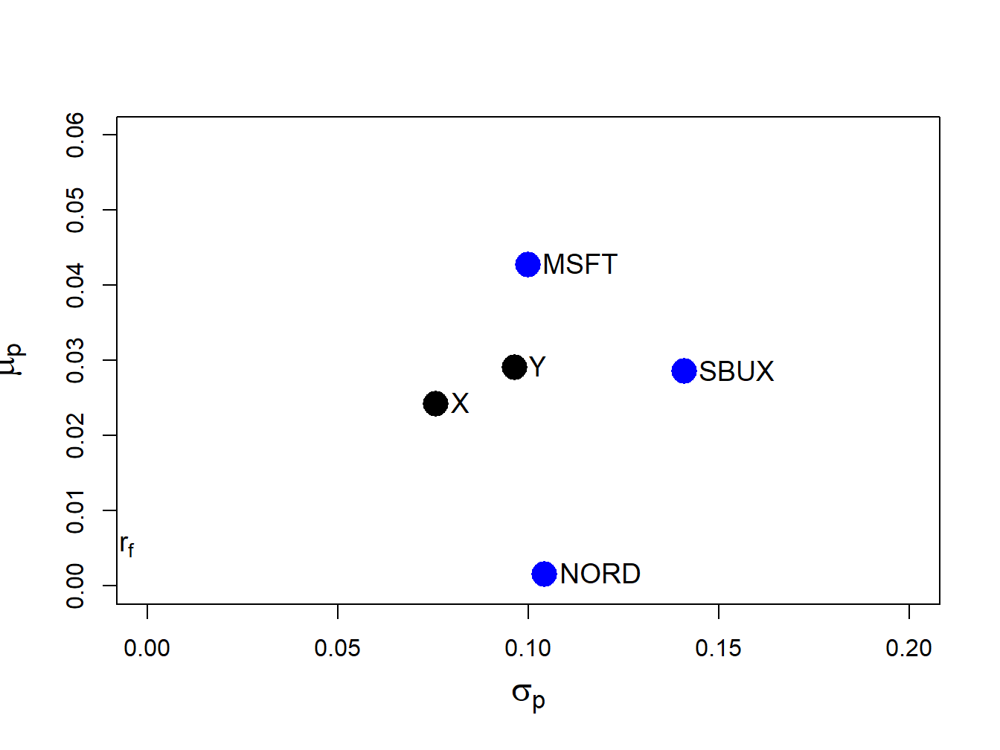
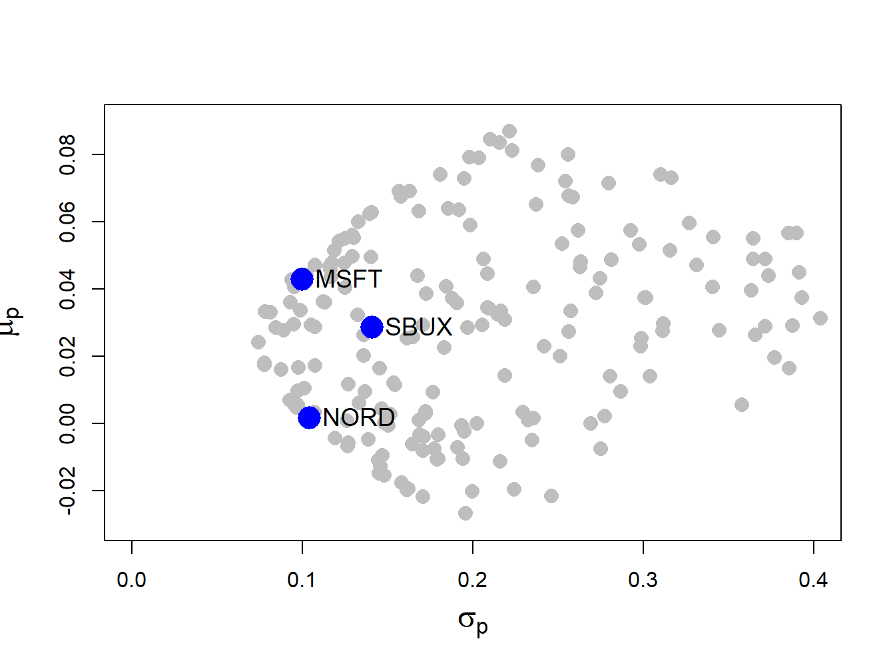
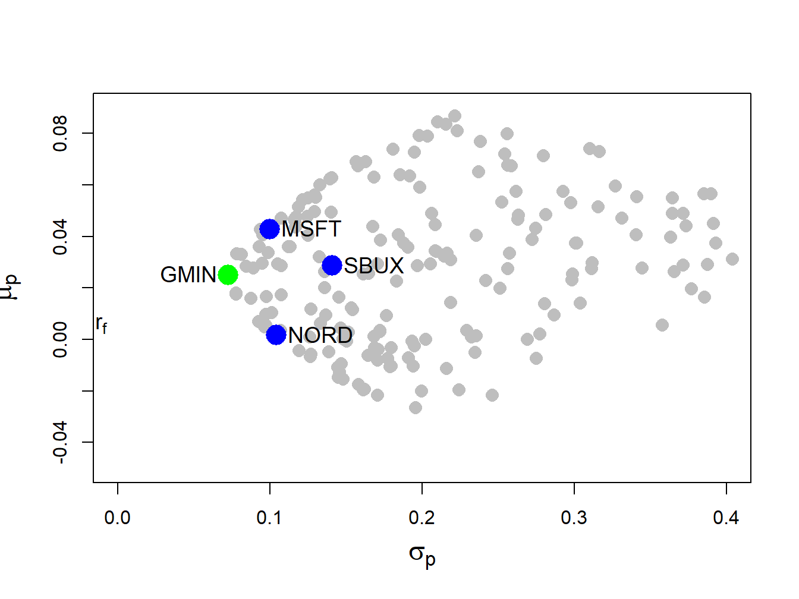
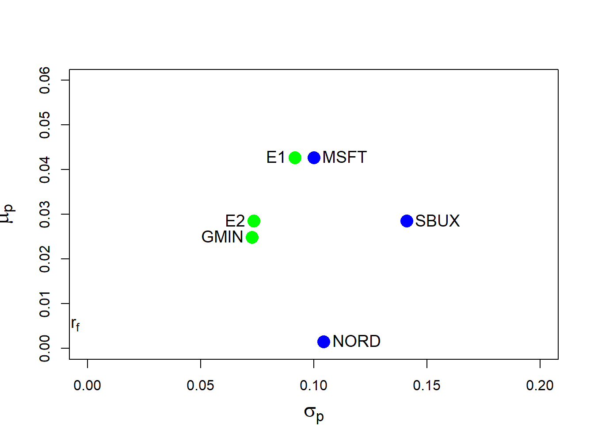
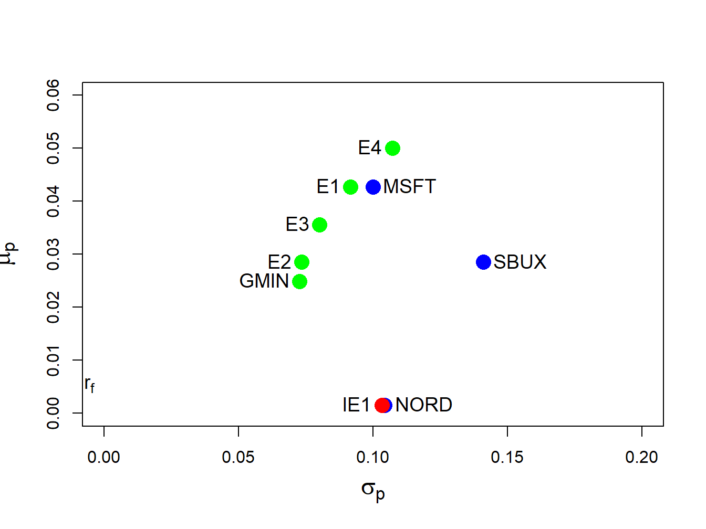
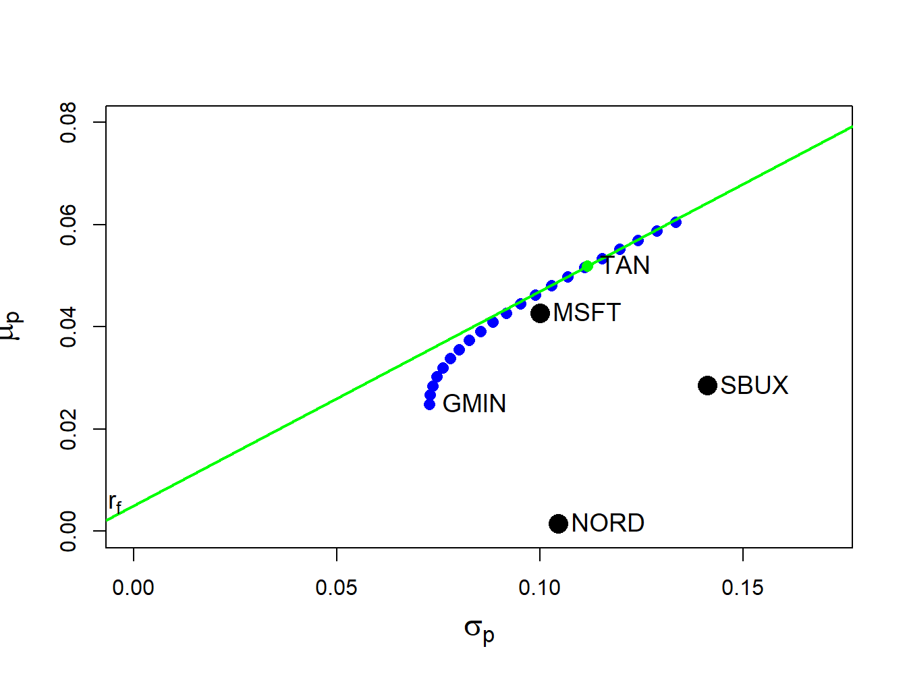
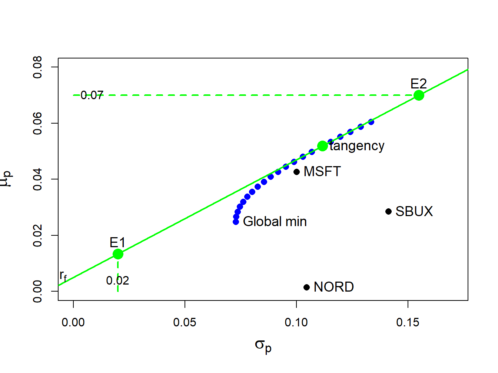
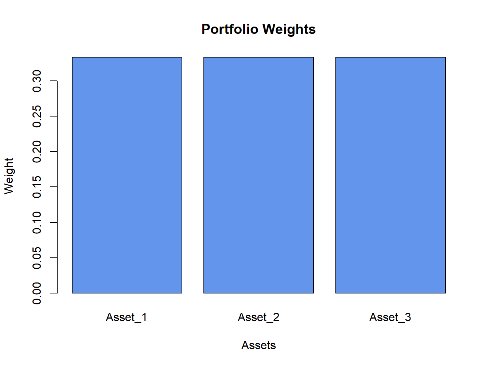
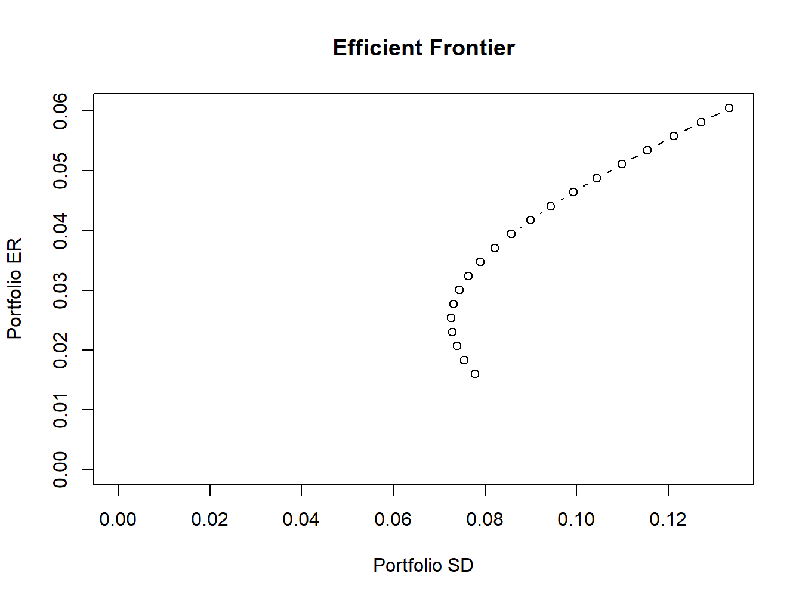
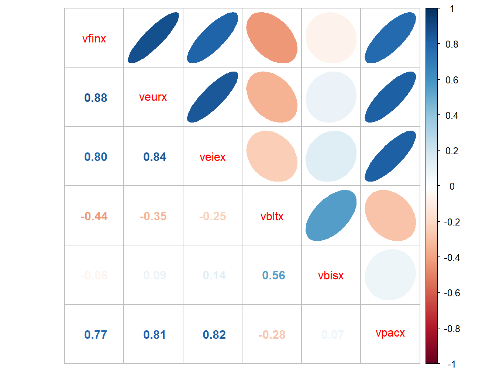

In this chapter, I extend the mean-variance portfolio theory introduced in chapter Chapter 10 to handle more than two risky assets. This extension allows the theory to be applied to the analysis of real world portfolios that consist of many risky assets as well as a risk-free asset. When working with large portfolios, the algebra of representing portfolio expected returns and variances becomes extremely cumbersome. As shown in chapter Chapter 3, the use of matrix algebra can greatly simplify many of these computations. Matrix algebra formulations are also very useful when it comes to do actual computations on the computer. The matrix algebra formulas are easy to translate into matrix programming languages like R. Popular spreadsheet programs like Microsoft Excel, which are the workhorse programs of many financial houses, can also handle basic matrix calculations but with more limited functionality. All of this makes it worthwhile to become familiar with matrix techniques for portfolio calculations.
This chapter is laid out as follows. In Section 11.1 I describe portfolios with \(N\) risky assets using matrix algebra. I elaborate the concept of portfolio risk diversification using calculations for large portfolios. In Section 11.2 through @ I cover the matrix algebra calculations required for determining mean-variance efficient portfolios. I give Explicit formulas for the global minimum variance portfolio, a minimum variance portfolio that achieves a specified target expected return, and the tangency portfolio. I also present a simple algorithm to easily trace out the risky asset only efficient frontier. In Section 6 I discuss some practical problems associated with very large portfolios, and in section 7 I summarize the introcompfinr functions for portfolio analysis. In ?sec-Real-World-Application-to-Vanguard-Mutual-Funds I give a real-world application of the theory to asset allocation among Vanguard mutual funds.
The examples I show in this chapter use the corrplot, introcompfinr and PerformanceAnalytics packages. Make sure these packages are installed and loaded in R before replicating the chapter examples.
11.1 Portfolios with \(N\) Risky Assets
Consider a portfolio with \(N\) risky assets, where \(N\) can be a large number (e.g., \(N=1,000)\). Let \(R_{i}\)\((i=1,\ldots,N)\) denote the simple return on asset \(i\) (over some fixed time horizon such as one year) and assume that the constant expected return (GWN) model holds for all assets: \[\begin{align*}
R_{i} & \sim GWN(\mu_{i},\sigma_{i}^{2}),\\
\mathrm{cov}(R_{i},R_{j}) & =\sigma_{ij}.
\end{align*}\]
Let \(x_{i}\) denote the share of wealth invested in asset \(i\)\((i=1,\ldots,N)\), and assume that all wealth is invested in the \(N\) assets so that \(\sum_{i=1}^{N}x_{i}=1.\) Assume that short sales are allowed so that some values of \(x_{i}\) can be negative. The portfolio return, \(R_{p,x},\) is the random variable \(R_{p,x}=\sum_{i=1}^{N}x_{i}R_{i}.\) The subscript “\(x\)” indicates that the portfolio is constructed using the “x-weights” \(x_{1},x_{2},\ldots,x_{N}\). The expected return on the portfolio is: \[
\mu_{p,x}=\sum_{i=1}^{N}x_{i}\mu_{i},
\] and the variance of the portfolio return is: \[
\sigma_{p,x}^{2}=\sum_{i=1}^{N}x_{i}^{2}\sigma_{i}^{2}+2\sum_{i=1}^{N}\sum_{j\neq i}x_{i}x_{j}\sigma_{ij}.
\] Notice that variance of the portfolio return depends on \(N\) variance terms and \(N(N-1)\) covariance terms. Hence, with \(N\) assets there are many more covariance terms than variance terms contributing to portfolio variance. For example, with \(N=100\) there are \(100\) variance terms and \(100\times99=9900\) covariance terms. With \(N\) assets, the algebra representing the portfolio return and risk characteristics is cumbersome, especially for the variance. You can greatly simplify the portfolio algebra using matrix notation, and this was previewed in Chapter 3.
11.1.1 Portfolio return and risk characteristics using matrix notation
Define the following \(N\times1\) column vectors containing the asset returns and portfolio weights: \[
\mathbf{R}=\left(\begin{array}{c}
R_{1}\\
\vdots\\
R_{N}
\end{array}\right),~\mathbf{x}=\left(\begin{array}{c}
x_{1}\\
\vdots\\
x_{N}
\end{array}\right).
\] In matrix notation we can lump multiple returns in a single vector which we denote by \(\mathbf{R}\). Since each of the elements in \(\mathbf{R}\) is a random variable we call \(\mathbf{R}\) a random vector. The probability distribution of the random vector \(\mathbf{R}\) is simply the joint distribution of the elements of \(\mathbf{R}\). In the GWN model all returns are jointly normally distributed and this joint distribution is completely characterized by the means, variances and covariances of the returns. We can easily express these values using matrix notation as follows. The \(N\times1\) vector of portfolio expected values is: \[
E[\mathbf{R}]=E\left[\left(\begin{array}{c}
R_{1}\\
\vdots\\
R_{N}
\end{array}\right)\right]=\left(\begin{array}{c}
E[R_{1}]\\
\vdots\\
E[R_{N}]
\end{array}\right)=\left(\begin{array}{c}
\mu_{1}\\
\vdots\\
\mu_{N}
\end{array}\right)=\boldsymbol{\mu},
\] and the \(N\times N\) covariance matrix of returns is:
Notice that the covariance matrix is symmetric (elements off the diagonal are equal so that \(\boldsymbol{\Sigma}=\boldsymbol{\Sigma}^{\prime}\), where \(\boldsymbol{\Sigma}^{\prime}\) denotes the transpose of \(\boldsymbol{\Sigma}\)) since \(\mathrm{cov}(R_{i},R_{j})=\mathrm{cov}(R_{j},R_{i})\) for \(i\neq j\). It will be positive definite provided no pair of assets is perfectly correlated (\(|\rho_{ij}|\neq1\) for all \(i\neq j\)) and no asset has a constant return (\(\sigma_{i}^{2}>0\) for all \(i\)).
The return on the portfolio using matrix notation is: \[
R_{p,x}=\mathbf{x}^{\prime}\mathbf{R}=(x_{1},\cdots,x_{N})\cdot\left(\begin{array}{c}
R_{1}\\
\vdots\\
R_{N}
\end{array}\right)=x_{1}R_{1}+\cdots+x_{N}R_{N}.
\] Similarly, the expected return on the portfolio is: \[
\mu_{p,x}=E[\mathbf{x}^{\prime}\mathbf{R]=x}^{\prime}E[\mathbf{R}]=\mathbf{x}^{\prime}\boldsymbol{\mu}=(x_{1},\ldots,x_{N})\cdot\left(\begin{array}{c}
\mu_{1}\\
\vdots\\
\mu_{N}
\end{array}\right)=x_{1}\mu_{1}+\cdots+x_{N}\mu_{N}.
\] The variance of the portfolio is: \[\begin{align*}
\sigma_{p,x}^{2} & =\mathrm{var}(\mathbf{x}^{\prime}\mathbf{R})=\mathbf{x}^{\prime}\boldsymbol{\Sigma}\mathbf{x}=(x_{1},\ldots,x_{N})\cdot\left(\begin{array}{ccc}
\sigma_{1}^{2} & \cdots & \sigma_{1N}\\
\vdots & \ddots & \vdots\\
\sigma_{1N} & \cdots & \sigma_{N}^{2}
\end{array}\right)\left(\begin{array}{c}
x_{1}\\
\vdots\\
x_{N}
\end{array}\right)\\
& =\sum_{i=1}^{N}x_{i}^{2}\sigma_{i}^{2}+2\sum_{i=1}^{N}\sum_{j\neq i}x_{i}x_{j}\sigma_{ij}.
\end{align*}\] The condition that the portfolio weights sum to one can be expressed as: \[
\mathbf{x}^{\prime}\mathbf{1}=(x_{1},\ldots,x_{N})\cdot\left(\begin{array}{c}
1\\
\vdots\\
1
\end{array}\right)=x_{1}+\cdots+x_{N}=1,
\] where \(\mathbf{1}\) is a \(N\times1\) vector with each element equal to 1.
Consider another portfolio with weights \(\mathbf{y}=(y_{1},\ldots,y_{N})^{\prime}\neq\mathbf{x}\). The return on this portfolio is \(R_{p,y}=\mathbf{y}^{\prime}\mathbf{R}\). Later on you will need to compute the covariance between the return on portfolio \(\mathbf{x}\) and the return on portfolio \(\mathbf{y}\), \(\mathrm{cov}(R_{p,x},R_{p,y})\). Using matrix algebra, this covariance can be computed as: \[
\sigma_{xy}=\mathrm{cov}(R_{p,x},R_{p,y})=\mathrm{cov}(\mathbf{x}^{\prime}\mathbf{R},\mathbf{y}^{\prime}\mathbf{R})=\mathbf{x}^{\prime}\boldsymbol{\Sigma} \mathbf{y}=(x_{1},\ldots,x_{N})\cdot\left(\begin{array}{ccc}
\sigma_{1}^{2} & \cdots & \sigma_{1N}\\
\vdots & \ddots & \vdots\\
\sigma_{1N} & \cdots & \sigma_{N}^{2}
\end{array}\right)\left(\begin{array}{c}
y_{1}\\
\vdots\\
y_{N}
\end{array}\right).
\]
Example 11.1 (Three asset example data) To illustrate portfolio calculations in R, table Table 11.1 gives example values on monthly means, variances and covariances for the simple returns on Microsoft, Nordstrom and Starbucks stock based on sample statistics computed over the five-year period January, 1995 through January, 2000. The risk-free asset is the monthly T-Bill with rate \(r_{f}=0.005\).
Figure 11.1: Risk-return characteristics of example data.
Clearly, Microsoft provides the best risk-return trade-off (i.e., has the highest Sharpe ratio) and Nordstorm provides with worst. \(\blacksquare\)
Example 11.2 (Portfolio computations in R) Consider an equally weighted portfolio with \(x_{MSFT}=x_{NORD}=x_{SBUX}=1/3\). This portfolio has return \(R_{p,x}=\mathbf{x}^{\prime}\mathbf{R}\) where \(\mathbf{x}=(1/3,1/3,1/3)^{\prime}\). Using R, the portfolio mean and variance are:
Next, consider another portfolio with weight vector \(\mathbf{y}=(y_{MSFT},y_{NORD},y_{SBUX})^{\prime}=(0.8,0.4,-0.2)^{\prime}\) and return \(R_{p,y}=\mathbf{y}^{\prime}\mathbf{R}\). The mean and volatility of this portfolio are:
The return and risk characteristics of the three assets together with portfolios x and y are illustrated in Figure 11.2. Notice that the equally weighted portfolio, portfolio x, has the smallest volatility.

Figure 11.2: Risk-return characteristics of example data and portfolios with weight vectors \(\mathbf{x}=(0.333,0.333,0.333)^{\prime}\) and \(\mathbf{y}=(0.8,0.4,-0.2)^{\prime}\).
\(\blacksquare\)
Example 11.3 (Risk-return characteristics of random portfolios) Figure 11.2 shows that the risk-return points associated with portfolios of three assets do not fall nicely on a bullet-shaped line, as they do with two asset portfolios. In fact, the set of risk-return points generated by varying the three portfolio weights is a solid area. To see this, consider creating a set of 200 randomly generated three-asset portfolios whose weights sum to one:
Figure 11.3 shows the means and volatilities, as grey dots, of these 200 random portfolios of the three assets. Notice that the grey dots outline a bullet-shaped area (Markowitz bullet) that has an outer boundary that looks like the line characterizing the two-asset portfolio frontier. If we let the number of random portfolios get very large then the grey dots will fill in a solid area. At the tip of the Markowitz bullet is the minimum variance portfolio.
Recall the definition of a mean-variance efficient portfolio given in Chapter Chapter 10. For a fixed volatility \(\sigma_{p,0}\) the efficient portfolio is the one with the highest expected return. From Figure 11.3, we can see that efficient portfolios will lie on the outer boundary (above the minimum variance portfolio at the tip of the Markowitz bullet) of the set of feasible portfolios.

Figure 11.3: Risk-return characteristics of 200 random portfolios of three assets.
\(\blacksquare\)
11.1.2 Large portfolios and diversification
One of the key benefits of forming large portfolios is risk reduction due to portfolio diversification. Generally, a diversified portfolio is one in which wealth is spread across many assets.
To illustrate the impact of diversification on the risk of large portfolios, consider an equally weighted portfolio of \(N\) risky assets where \(N\) is a large number (e.g., \(N>100)\). Here, \(x_{i}=1/N\) and the \(N\times1\) portfolio weight vector is \(\mathbf{x}=(1/N,1/N,\ldots,1/N)^{\prime}=(1/N)(1,1,\ldots,1)^{\prime}=(1/N)\mathbf{1}\) where \(\mathbf{1}\) is an \(N\times1\) vector of ones. Let the \(N\times1\) return vector \(\mathbf{R}\) be described by the GWN model so that \(\mathbf{R}\sim N(\boldsymbol{\mu},\boldsymbol{\Sigma})\). The portfolio return is \(R_{p,x}=\mathbf{x}^{\prime}\mathbf{R}=(1/N)\mathbf{1}^{\prime}\mathbf{R}=(1/N)\sum_{i=1}^{N}R_{i}.\) The variance of this portfolio is: \[
\mathrm{var}(R_{p,x})=\mathrm{var}(\mathbf{x}^{\prime}\mathbf{R})=\mathrm{var}\left(\frac{1}{N}\mathbf{1}^{\prime}\mathbf{R}\right)=\frac{1}{N^{2}}\mathbf{1}^{\prime}\boldsymbol{\Sigma}\mathbf{1}.
\] Now, \[\begin{align*}
\mathbf{1}^{\prime}\boldsymbol{\Sigma}\mathbf{1}&=(\begin{array}{cccc}
1 & 1 & \ldots & 1\end{array})^{\prime}\left(\begin{array}{cccc}
\sigma_{1}^{2} & \sigma_{12} & \ldots & \sigma_{1N}\\
\sigma_{12} & \sigma_{2}^{2} & \ldots & \sigma_{2N}\\
\vdots & \vdots & \ddots & \vdots\\
\sigma_{1N} & \sigma_{2N} & \ldots & \sigma_{N}^{2}
\end{array}\right)\left(\begin{array}{c}
1\\
1\\
\vdots\\
1
\end{array}\right)\\
&=\text{ sum of all elements in } \boldsymbol{\Sigma}.
\end{align*}\] As a result, we can write: \[
\mathbf{1}^{\prime}\boldsymbol{\Sigma}\mathbf{1}=\sum_{i=1}^{N}\sigma_{i}^{2}+\sum_{j\neq i}\sigma_{ij},
\] which is the sum of the \(N\) diagonal variance terms plus the \(N(N-1)\) off-diagonal covariance terms. Define the average variance as the average of the diagonal terms of \(\boldsymbol{\Sigma}\): \[
\overline{\mathrm{var}}=\frac{1}{N}\sum_{i=1}^{N}\sigma_{i}^{2},
\] and the average covariance as the average of the off-diagonal terms of \(\boldsymbol{\Sigma}\): \[
\overline{\mathrm{cov}}=\frac{1}{N(N-1)}\sum_{j\neq i}\sigma_{ij}.
\] Then \(\mathbf{1}^{\prime}\boldsymbol{\Sigma}\mathbf{1}=N\overline{\mathrm{var}}+N(N-1)\overline{\mathrm{cov}}\) and \(\mathrm{var}(R_{p,x})\) reduces to: \[
\mathrm{var}(R_{p,x}) = \frac{1}{N^{2}}\mathbf{1}^{\prime}{\Sigma}\mathbf{1}=\frac{1}{N}\overline{\mathrm{var}}+\frac{N(N-1)}{N^{2}}\overline{\mathrm{cov}} = \frac{1}{N}\overline{\mathrm{var}}+\left(1-\frac{1}{N}\right)\overline{\mathrm{cov}}.
\tag{11.1}\] If \(N\) is reasonably large (e.g. \(N>100\)) then \[
\frac{1}{N}\overline{\mathrm{var}}\approx0\,\mathrm{and}\,\frac{1}{N}\overline{\mathrm{cov}}\approx0,
\] so that \[
\mathrm{var}(R_{p,x})\approx\overline{\mathrm{cov}}.
\] Hence, in a large diversified portfolio the portfolio variance is approximately equal to the average of the pairwise covariances. So what matters for portfolio risk is not the individual asset variances but rather the average of the asset covariances. In particular, portfolios with highly positively correlated returns will have higher portfolio variance than portfolios with less correlated returns.
Equation 11.1 also shows that portfolio variance should be a decreasing function of the number of assets in the portfolio, and that this function should level off at \(\overline{\mathrm{cov}}\) for large \(N\).
11.1.2.1 Large portfolio with perfectly positively correlated assets
In chapter Chapter 10 I showed that the volatility of a long-only portfolio of two risky assets with perfectly positively correlated returns (\(\rho_{12}=1\)) is equal to a share weighted average of the asset volatilities: \(\sigma_{p}=x_{1}\sigma_{1}+x_{2}\sigma_{2}.\) Here, we show using matrix algebra that this result generalizes to the case of \(N\) assets. Let \(\mathbf{R}\) be an \(N\times1\) vector of asset returns and assume that all returns are perfectly positively correlated (\(\rho_{ij}=1\) for all \(i,j\)). The \(N\times N\) return correlation matrix is then: \[
\mathbf{C}=\left(\begin{array}{cccc}
1 & 1 & \ldots & 1\\
1 & 1 & \ldots & 1\\
\vdots & \vdots & \ddots & \vdots\\
1 & 1 & \ldots & 1
\end{array}\right)=\left(\begin{array}{c}
1\\
1\\
\vdots\\
1
\end{array}\right)\left(\begin{array}{cccc}
1 & 1 & \ldots & 1\end{array}\right)=\mathbf{1}\mathbf{1}^{\prime},
\] and the \(N\times N\) return covariance matrix is: \[
{\Sigma}=\mathbf{D}\mathbf{C}\mathbf{D=D\mathbf{1}\mathbf{1}^{\prime}D},
\] where \(\mathbf{D}=\mathrm{diag}(\sigma_{1},\sigma_{2},\ldots,\sigma_{N})\). Let \(\mathbf{x}=(x_{1},x_{2},\ldots,x_{N})^{\prime}\) be a portfolio weight vector and let \(R_{p,x}=\mathbf{x}^{\prime}\mathbf{R}\) denote the portfolio return. Then: \[
\sigma_{p}^{2}=\mathrm{var}(\mathbf{x}^{\prime}\mathbf{R})=\mathbf{x}^{\prime}\boldsymbol{\Sigma} \mathbf{x}=\mathbf{x}^{\prime}\mathbf{D}\mathbf{1}\mathbf{1}^{\prime}\mathbf{Dx}=\left(\mathbf{x}^{\prime}\mathbf{D}\mathbf{1}\right)^{2}.
\] Now, \[\begin{eqnarray*}
\mathbf{x}^{\prime}\mathbf{D}\mathbf{1} & = & \left(\begin{array}{cccc}
x_{1} & x_{2} & \ldots & x_{N}\end{array}\right)\left(\begin{array}{cccc}
\sigma_{1} & 0 & \cdots & 0\\
0 & \sigma_{2} & \cdots & 0\\
\vdots & \vdots & \ddots & \vdots\\
0 & 0 & \cdots & \sigma_{N}
\end{array}\right)\left(\begin{array}{c}
1\\
1\\
\vdots\\
1
\end{array}\right)\\
& = &\left(\begin{array}{cccc}
x_{1}\sigma_{1} & 0 & \cdots & 0\\
0 & x_{2}\sigma_{2} & \cdots & 0\\
\vdots & \vdots & \ddots & \vdots\\
0 & 0 & \cdots & x_{N}\sigma_{N}
\end{array}\right)\left(\begin{array}{c}
1\\
1\\
\vdots\\
1
\end{array}\right)\\
& = & \sum_{i=1}^{N}x_{i}\sigma_{i}.
\end{eqnarray*}\] Therefore, \[
\sigma_{p}^{2}=\left(\mathbf{x}^{\prime}\mathbf{D}\mathbf{1}\right)^{2}=\left(\sum_{i=1}^{N}x_{i}\sigma_{i}\right)^{2}
\] and so: \[
\sigma_{p}=\sum_{i=1}^{N}x_{i}\sigma_{i}.
\] When all assets have perfectly positively correlated returns, portfolio volatility is a share weighted average of individual asset volatilities. You can think of this as the risk of a (long-only) portfolio when there are no diversification benefits. When assets are not all perfectly positively correlated, there are some diversification benefits and so \(\sigma_{p}\) will be less than \(\sum_{i=1}^{N}x_{i}\sigma_{i}.\)
11.2 Determining the Global Minimum Variance Portfolio Using Matrix Algebra
The global minimum variance portfolio \(\mathbf{m}=(m_{1},\ldots,m_{N})^{\prime}\) for the \(N\) asset case solves the constrained minimization problem:
\[
\min_{\mathbf{m}}~\sigma_{p,m}^{2}=\mathbf{m^{\prime}{\Sigma} m}, ~ s.t. ~ \mathbf{m^{\prime}1}=1.
\tag{11.2}\] The Lagrangian for this problem is: \[\begin{align*}
L(\mathbf{m},\lambda) & =\mathbf{m}^{\prime}\boldsymbol{\Sigma} \mathbf{m}+\lambda(\mathbf{m}^{\prime}\mathbf{1}-1),
\end{align*}\] and the first order conditions (FOCs) for a minimum are: \[
\mathbf{0} =\frac{\partial L}{\partial\mathbf{m}}=\frac{\partial\mathbf{m}^{\prime}\boldsymbol{\Sigma}\mathbf{ m}}{\partial\mathbf{m}}+\frac{\partial\lambda(\mathbf{m}^{\prime}\mathbf{1}-1)}{\partial\mathbf{m}}=2\boldsymbol{\Sigma} \mathbf{m}+\lambda\mathbf{1},
\tag{11.3}\]\[
0 =\frac{\partial L}{\partial\lambda}=\frac{\partial\mathbf{m^{\prime}\boldsymbol{\Sigma} m}}{\partial\lambda}+\frac{\partial\lambda(\mathbf{m^{\prime}1}-1)}{\partial\lambda}=\mathbf{m^{\prime}1}-1.
\tag{11.4}\] The FOCs Equation 11.3 - Equation 11.4 give \(N+1\) linear equations in \(N+1\) unknowns which can be solved to find the global minimum variance portfolio weight vector \(\mathbf{m}\) as follows. The \(N+1\) linear equations describing the first order conditions have the matrix representation: \[
\left(\begin{array}{cc}
2\boldsymbol{\Sigma} & \mathbf{1}\\
\mathbf{1}^{\prime} & 0
\end{array}\right)\left(\begin{array}{c}
\mathbf{m}\\
\lambda
\end{array}\right)=\left(\begin{array}{c}
\mathbf{0}\\
1
\end{array}\right).
\tag{11.5}\]
The system Equation 11.5 is of the form \(\mathbf{A}_{m}\mathbf{z}_{m}=\mathbf{b}\), where: \[
\mathbf{A}_{m}=\left(\begin{array}{cc}
2\boldsymbol{\Sigma} & \mathbf{1}\\
\mathbf{1}^{\prime} & 0
\end{array}\right),~\mathbf{z}_{m}=\left(\begin{array}{c}
\mathbf{m}\\
\lambda
\end{array}\right)\textrm{ and }\mathbf{b}=\left(\begin{array}{c}
\mathbf{0}\\
1
\end{array}\right).
\] Provided \(\mathbf{A}_{m}\) is invertible, the solution for \(\mathbf{z}_{m}\) is:1\[
\mathbf{z}_{m}=\mathbf{A}_{m}^{-1}\mathbf{b}.
\tag{11.6}\] The first \(N\) elements of \(\mathbf{z}_{m}\) is the portfolio weight vector \(\mathbf{m}\) for the global minimum variance portfolio with expected return \(\mu_{p,m}=\mathbf{m}^{\prime}\boldsymbol{\mu}\) and variance \(\sigma_{p,m}^{2}=\mathbf{m}^{\prime}\boldsymbol{\Sigma} \mathbf{m}\).
Example 11.4 (Global minimum variance portfolio for example data) Using the data in Table Table 11.1, you can use R to compute the global minimum variance portfolio weights from Equation 11.6 as follows:
Hence, the global minimum variance portfolio has portfolio weights \(m_{\textrm{msft}}=0.441\), \(m_{\textrm{nord}}=0.366\) and \(m_{\textrm{sbux}}=0.193\), and is given by the vector \(\mathbf{m}=(0.441,0.366,0.193)^{\prime}\). The expected return on this portfolio, \(\mu_{p,m}=\mathbf{m}^{\prime}\boldsymbol{\mu}\), is:
In Figure 11.4, this portfolio is labeled “GMIN” .

Figure 11.4: Global minimum variance portfolio from example data.
\(\blacksquare\)
11.2.1 Alternative derivation of global minimum variance portfolio
We can use the first order conditions Equation 11.3 - Equation 11.4 to give an explicit solution for the global minimum variance portfolio \(\mathbf{m}\) as follows. First, use Equation 11.3 to solve for \(\mathbf{m}\) as a function of \(\lambda\): \[
\mathbf{m}=-\frac{1}{2}\cdot\lambda\boldsymbol{\Sigma}^{-1}\mathbf{1}.
\tag{11.7}\] Next, multiply both sides of Equation 11.7 by \(\mathbf{1}^{\prime}\) and use Equation 11.4 to solve for \(\lambda\): \[\begin{align*}
1 & =\mathbf{1}^{\prime}\mathbf{m}=-\frac{1}{2}\cdot\lambda\mathbf{1}^{\prime}\boldsymbol{\Sigma}^{-1}\mathbf{1}\\
& \Rightarrow\lambda=-2\cdot\frac{1}{\mathbf{1}^{\prime}\boldsymbol{\Sigma}^{-1}\mathbf{1}}.
\end{align*}\] Finally, substitute the value for \(\lambda\) back into Equation 11.7 to solve for \(\mathbf{m}\): \[
\mathbf{m}=-\frac{1}{2}\left(-2\right)\frac{1}{\mathbf{1}^{\prime}\boldsymbol{\Sigma}^{-1}\mathbf{1}}\boldsymbol{\Sigma}^{-1}\mathbf{1}=\frac{\boldsymbol{\Sigma}^{-1}\mathbf{1}}{\mathbf{1}^{\prime}{\boldsymbol{\Sigma}}^{-1}\mathbf{1}}.
\tag{11.8}\] Notice that Equation 11.8 shows that a solution for \(\mathbf{m}\) exists as long as \(\boldsymbol{\Sigma}\) is invertible.
Example 11.5 (Finding global minimum variance portfolio for example data) Using the data in Table Table 11.1, we can use R to compute the global minimum variance portfolio weights from Equation 11.8 as follows:
11.3 Determining Mean-Variance Efficient Portfolios Using Matrix Algebra
The investment opportunity set is the set of portfolio expected return, \(\mu_{p}\), and portfolio standard deviation, \(\sigma_{p}\), values for all possible portfolios whose weights sum to one. As in the two risky asset case, this set can be described in a graph with \(\mu_{p}\) on the vertical axis and \(\sigma_{p}\) on the horizontal axis. With two assets, the investment opportunity set in (\(\mu_{p},\sigma_{p}\))-space lies on a curve (one side of a hyperbola). With three or more assets, the investment opportunity set in (\(\mu_{p},\sigma_{p}\))-space is described by set of values whose general shape is complicated and depends crucially on the covariance terms \(\sigma_{ij}\).2 However, we do not have to fully characterize the entire investment opportunity set. If we assume that investors choose portfolios to maximize expected return subject to a target level of risk, or, equivalently, to minimize risk subject to a target expected return, then we can simplify the asset allocation problem by only concentrating on the set of efficient portfolios. These portfolios lie on the boundary of the investment opportunity set above the global minimum variance portfolio. This is the framework originally developed by Harry Markowitz, the father of portfolio theory and winner of the Nobel Prize in economics.
Following Markowitz, we assume that investors wish to find portfolios that have the best expected return-risk trade-off. We can characterize these efficient portfolios in two equivalent ways. In the first way, investors seek to find portfolios that maximize portfolio expected return for a given level of risk as measured by portfolio variance. Let \(\sigma_{p,0}^{2}\) denote a target level of risk. Then the constrained maximization problem to find an efficient portfolio is: \[
\begin{aligned}
\max_{\mathbf{x}}\mu_{p} & =\mathbf{x}^{\prime}\boldsymbol{\mu} \\
\textrm{ s.t. } \sigma_{p}^{2} & =\mathbf{x}^{\prime}\boldsymbol{\Sigma} \mathbf{x}=\sigma_{p,0}^{2}\textrm{ and }\mathbf{x}^{\prime}\mathbf{1}=1.
\end{aligned}
\tag{11.9}\] The investor’s problem of maximizing portfolio expected return subject to a target level of risk has an equivalent dual representation in which the investor minimizes the risk of the portfolio (as measured by portfolio variance) subject to a target expected return level. Let \(\mu_{p,0}\) denote a target expected return level. Then the dual problem is the constrained minimization problem:3\[
\begin{aligned}
\min_{\mathbf{x}}~\sigma_{p,x}^{2} & =\mathbf{x}^{\prime}\boldsymbol{\Sigma} \mathbf{x} \\
\textrm{ s.t. } \mu_{p} & =\mathbf{x}^{\prime}\boldsymbol{\mu}=\mu_{p,0}\mathbf{,}\textrm{ and }\mathbf{x}^{\prime}\mathbf{1}=1.
\end{aligned}
\tag{11.10}\] To find efficient portfolios of risky assets in practice, the dual problem Equation 11.10 is most often solved. This is partially due to computational conveniences and partly due to investors being more willing to specify target expected returns rather than target risk levels. The efficient portfolio frontier is a graph of \(\mu_{p}\) versus \(\sigma_{p}\) values for the set of efficient portfolios generated by solving Equation 11.10 for all possible target expected return levels \(\mu_{p,0}\) above the expected return on the global minimum variance portfolio. Just as in the two asset case, the resulting efficient frontier will resemble one side of an hyperbola and is often called the “Markowitz bullet”. This frontier is illustrated in Figure 11.3 as the boundary of the set generated by random portfolios above the global minimum variance portfolio.
To solve the constrained minimization problem Equation 11.10, first form the Lagrangian function: \[
L(x,\lambda_{1},\lambda_{2})=\mathbf{x}^{\prime}\boldsymbol{\Sigma} \mathbf{x}+\lambda_{1}(\mathbf{x}^{\prime}\boldsymbol{\mu}-\mu_{p,0})+\lambda_{2}(\mathbf{x}^{\prime}\mathbf{1}-1).
\] Because there are two constraints (\(\mathbf{x}^{\prime}\boldsymbol{\mu}=\mu_{p,0}\) and \(\mathbf{x}^{\prime}\mathbf{1}=1)\) there are two Lagrange multipliers \(\lambda_{1}\) and \(\lambda_{2}\). The FOCs for a minimum are the linear equations: \[
\frac{\partial L(\mathbf{x},\lambda_{1},\lambda_{2})}{\partial\mathbf{x}} =2\boldsymbol{\Sigma} \mathbf{x}+\lambda_{1}\boldsymbol{\mu}+\lambda_{2}\mathbf{1}=\mathbf{0,}
\tag{11.11}\]\[
\frac{\partial L(\mathbf{x},\lambda_{1},\lambda_{2})}{\partial\lambda_{1}} =\mathbf{x}^{\prime}\boldsymbol{\mu}-\mu_{p,0}=0,
\tag{11.12}\]\[
\frac{\partial L(\mathbf{x},\lambda_{1},\lambda_{2})}{\partial\lambda_{2}} =\mathbf{x}^{\prime}\mathbf{1}-1=0.
\tag{11.13}\]
These FOCs consist of \(N+2\) linear equations in \(N+2\) unknowns (\(\mathbf{x},\,\lambda_{1},\,\lambda_{2})\). We can represent the system of linear equations using matrix algebra as: \[
\left(\begin{array}{ccc}
2\boldsymbol{\Sigma} & \boldsymbol{\mu} & \mathbf{1}\\
\boldsymbol{\mu}^{\prime} & 0 & 0\\
\mathbf{1}^{\prime} & 0 & 0
\end{array}\right)\left(\begin{array}{c}
\mathbf{x}\\
\lambda_{1}\\
\lambda_{2}
\end{array}\right)=\left(\begin{array}{c}
\mathbf{0}\\
\mu_{p,0}\\
1
\end{array}\right),
\] which is of the form \(\mathbf{Az}_{x}\mathbf{=b}_{0}\), where \[
\mathbf{A}=\left(\begin{array}{ccc}
2\boldsymbol{\Sigma} & \boldsymbol{\mu} & \mathbf{1}\\
\boldsymbol{\mu}^{\prime} & 0 & 0\\
\mathbf{1}^{\prime} & 0 & 0
\end{array}\right),~\mathbf{z}_{x}=\left(\begin{array}{c}
\mathbf{x}\\
\lambda_{1}\\
\lambda_{2}
\end{array}\right)\textrm{ and }\mathbf{b}_{0}=\left(\begin{array}{c}
\mathbf{0}\\
\mu_{p,0}\\
1
\end{array}\right).
\] The solution for \(\mathbf{z}_{x}\) is then: \[
\mathbf{z}_{x}=\mathbf{A}^{-1}\mathbf{b}_{0}.
\tag{11.14}\] The first \(N\) elements of \(\mathbf{z}_{x}\) are the portfolio weights \(\mathbf{x}\) for the minimum variance portfolio with expected return \(\mu_{p,x}=\mu_{p,0}\). If \(\mu_{p,0}\) is greater than or equal to the expected return on the global minimum variance portfolio, then \(\mathbf{x}\) is an efficient (frontier) portfolio. Otherwise, it is an inefficient (frontier) portfolio.
Example 11.6 (Efficient portfolio with the same expected return as Microsoft) Using the data in Table Table 11.1, consider finding a minimum variance portfolio with the same expected return as Microsoft. This will be an efficient portfolio because \(\mu_{\textrm{msft}}=0.043>\mu_{p,m}=0.025\). Call this portfolio \(\mathbf{x}=(x_{\textrm{msft}},x_{\textrm{nord}},x_{\textrm{sbux}})^{\prime}\). That is, consider solving Equation 11.10 with target expected return \(\mu_{p,0}=\mu_{\textrm{msft}}=0.043\) using Equation 11.14. The R calculations to create the matrix \(\mathbf{A}_{x}\) and the vectors \(\mathbf{z}_{x}\) and \(\mathbf{b}_{\textrm{msft}}\) are:
The efficient portfolio with the same expected return as Microsoft has portfolio weights \(x_{\textrm{msft}}=0.8275\), \(x_{\textrm{nord}}=-0.0907\) and \(x_{\textrm{sbux}}=0.2633\), and is given by the vector \(\mathbf{x}=(0.8275,-0.0907,0.2633)^{\prime}.\) The expected return on this portfolio, \(\mu_{p,x}=\mathbf{x}^{\prime}\boldsymbol{\mu}\), is equal to the target return \(\mu_{\textrm{msft}}\):
and are smaller than the corresponding values for Microsoft (see Table Table 11.1). This efficient portfolio is labeled “E1” in Figure 11.5. \(\blacksquare\)
Example 11.7 (Efficient portfolio with the same expected return as Starbucks) To find a minimum variance portfolio \(\mathbf{y}=(y_{\textrm{msft}},y_{\textrm{nord}},y_{\textrm{sbux}})^{\prime}\) with the same expected return as Starbucks we use Equation 11.14 with \(\mathbf{b}_{\textrm{sbux}}=(\mathbf{0}',\mu_{\textrm{sbux}},1)^{\prime}\):
The portfolio \(\mathbf{y}=(0.519,0.273,0.207)^{\prime}\) is an efficient portfolio on the outer boundary because \(\mu_{\textrm{sbux}}=0.0285>\mu_{p,m}=0.0249\). The portfolio expected return and standard deviation are:
This efficient portfolio is labeled “E2” in Figure 11.5. It has the same expected return as SBUX but a smaller standard deviation. \(\blacksquare\)
The covariance and correlation values between the portfolio returns \(R_{p,x}=\mathbf{x}^{\prime}\mathbf{R}\) and \(R_{p,y}=\mathbf{y}^{\prime}\mathbf{R}\) are given by:
This covariance will be used later on when constructing the entire frontier of efficient portfolios.

Figure 11.5: Minimum variance efficient portfolios from example data. Portfolio E1 has the same expected return as Microsoft, and portfolio E2 has the same expected returns as Starbucks.
11.3.1 Alternative derivation of an efficient portfolio
Equation 11.14 does not give an explicit solution for the minimum variance portfolio \(\mathbf{x}\). As with the global minimum variance portfolio Equation 11.8, an explicit solution for \(\mathbf{x}\) can also be found. Consider the first order conditions Equation 11.11 - Equation 11.13 from the optimization problem Equation 11.10. First, use Equation 11.11 to solve for the \(N\times1\) vector \(\mathbf{x}\): \[
\mathbf{x}=-\frac{1}{2}\lambda_{1}\boldsymbol{\Sigma}^{-1}\boldsymbol{\mu}-\frac{1}{2}\lambda_{2}\boldsymbol{\Sigma}^{-1}\mathbf{1}.
\tag{11.15}\] Define the \(N\times2\) matrix \(\mathbf{M}=[\boldsymbol{\mu}\)\(\vdots\)\(\mathbf{1}]\) and the \(2\times1\) vector \(\boldsymbol{\lambda}=(\lambda_{1},\lambda_{2})^{\prime}\). Then we can rewrite Equation 11.15 in matrix form as: \[
\mathbf{x}=-\frac{1}{2}\boldsymbol{\Sigma}^{-1}\mathbf{M}\boldsymbol{\lambda}.
\tag{11.16}\] Next, to find the values for \(\lambda_{1}\) and \(\lambda_{2}\), pre-multiply Equation 11.15 by \(\boldsymbol{\mu}^{\prime}\) and use Equation 11.12 to give: \[
\mu_{0} = \boldsymbol{\mu}^{\prime}\mathbf{x}
= \frac{1}{2}\lambda_{1}\boldsymbol{\mu}^{\prime}\boldsymbol{\Sigma}^{-1}\boldsymbol{\mu} - \frac{1}{2}\lambda_{2}
\boldsymbol{\mu}^{\prime}\boldsymbol{\Sigma}^{-1}\mathbf{1}.
\tag{11.17}\] Similarly, pre-multiply Equation 11.15 by \(\mathbf{1}^{\prime}\) and use Equation 11.13 to give: \[
1= \mathbf{1}^{\prime}\mathbf{x}= -\frac{1}{2}\lambda_{1}\mathbf{1}^{\prime}\boldsymbol{\Sigma}^{-1}\boldsymbol{\mu}
-\frac{1}{2}\lambda_{2}\mathbf{1}^{\prime}\boldsymbol{\Sigma}^{-1}\mathbf{1}.
\tag{11.18}\] Now, we have two linear equations Equation 11.17 and Equation 11.18 involving \(\lambda_{1}\) and \(\lambda_{2}\) which we can write in matrix notation as: \[
-\frac{1}{2}\left(\begin{array}{cc}
\boldsymbol{\mu}^{\prime}\boldsymbol{\Sigma}^{-1}\boldsymbol{\mu} & \boldsymbol{\mu}^{\prime}\boldsymbol{\Sigma}^{-1}\mathbf{1}\\
\boldsymbol{\mu}^{\prime}\boldsymbol{\Sigma}^{-1}\mathbf{1} & \mathbf{1}^{\prime}\boldsymbol{\Sigma}^{-1}\mathbf{1}
\end{array}\right)\left(\begin{array}{c}
\lambda_{1}\\
\lambda_{2}
\end{array}\right)=\left(\begin{array}{c}
\mu_{0}\\
1
\end{array}\right).
\tag{11.19}\] Define, \[\begin{align*}
\left(\begin{array}{cc}
\boldsymbol{\mu}^{\prime}\boldsymbol{\Sigma}^{-1}\boldsymbol{\mu} & \boldsymbol{\mu}^{\prime}\boldsymbol{\Sigma}^{-1}\mathbf{1}\\
\boldsymbol{\mu}^{\prime}\boldsymbol{\Sigma}^{-1}\mathbf{1} & \mathbf{1}^{\prime}\boldsymbol{\Sigma}^{-1}\mathbf{1}
\end{array}\right) & =\mathbf{M}^{\prime}\boldsymbol{\Sigma}^{-1}\mathbf{M=B},\\
\tilde{\boldsymbol{\mu}}_{0} & =\left(\begin{array}{c}
\mu_{0}\\
1
\end{array}\right),
\end{align*}\] so that we can rewrite Equation 11.19 as, \[
-\frac{1}{2}\mathbf{B}\boldsymbol{\lambda}=\tilde{\boldsymbol{\mu}}_{0}.
\] Provided \(\mathbf{B}\) is invertible, the solution for \(\boldsymbol{\lambda}=(\lambda_{1},\lambda_{2})^{\prime}\) is \[
\boldsymbol{\lambda}=-2\mathbf{B}^{-1}\tilde{\boldsymbol{\mu}}_{0}.
\tag{11.20}\] Substituting Equation 11.20 back into Equation 11.16 gives an explicit expression for the efficient portfolio weight vector \(\mathbf{x}:\)\[
\mathbf{x}=-\frac{1}{2}\boldsymbol{\Sigma}^{-1}\mathbf{M}\boldsymbol{\lambda}=-\frac{1}{2}\boldsymbol{\Sigma}^{-1}\mathbf{M}\left(-2\mathbf{B}^{-1}\tilde{\mu}_{0}\right)=\boldsymbol{\Sigma}^{-1}\mathbf{MB}^{-1}\tilde{\boldsymbol{\mu}}_{0}.
\tag{11.21}\]
Example 11.8 (Alternative solution for efficient portfolio with the same expected return as Microsoft) The R code to compute the efficient portfolio with the same expected return as Microsoft using Equation 11.21 is:
11.4 Computing the Mean-Variance Efficient Frontier
The analytic expression for a minimum variance portfolio Equation 11.21 can be used to show that any minimum variance portfolio can be created as a linear combination of any two minimum variance portfolios with different target expected returns. If the expected return on the resulting portfolio is greater than the expected return on the global minimum variance portfolio, then the portfolio is an efficient frontier portfolio. Otherwise, the portfolio is an inefficient frontier portfolio. As a result, to compute the portfolio frontier in \((\mu_{p},\sigma_{p})\) space (Markowitz bullet) we only need to find two efficient portfolios. The remaining frontier portfolios can then be expressed as linear combinations of these two portfolios. The following proposition describes the process for the three risky asset case using matrix algebra.
Proposition 11.1 (Creating a frontier portfolio from two minimum variance portfolios) Let \(\mathbf{x}\) and \(\mathbf{y}\) be any two minimum variance portfolios with different target expected returns \(\mathbf{x}^{\prime}\boldsymbol{\mu}=\mu_{p,0}\neq\mathbf{y}^{\prime}\boldsymbol{\mu}=\mu_{p,1}\). That is, portfolio \(\mathbf{x}\) solves: \[\begin{align*}
\min_{\mathbf{x}}~\sigma_{p,x}^{2}&=\mathbf{x}^{\prime}\boldsymbol{\Sigma} \mathbf{x}\\
\textrm{ s.t. }\mathbf{x}^{\prime}\boldsymbol{\mu}&=\mu_{p,0}\textrm{ and }\mathbf{x}^{\prime}\mathbf{1}=1,
\end{align*}\] and portfolio \(\mathbf{y}\) solves, \[\begin{align*}
\min_{\mathbf{y}}\sigma_{p,y}^{2}&=\mathbf{y}^{\prime}\boldsymbol{\Sigma} \mathbf{y}\\
\textrm{ s.t. }\mathbf{y}^{\prime}\boldsymbol{\mu}&=\mu_{p,1}\textrm{ and }\mathbf{y}^{\prime}\mathbf{1}=1.
\end{align*}\] Let \(\alpha\) be any constant and define the portfolio \(\mathbf{z}\) as a linear combination of portfolios \(\mathbf{x}\) and \(\mathbf{y}\): \[
\begin{aligned}
\mathbf{z} & =\alpha\cdot\mathbf{x}+(1-\alpha)\cdot\mathbf{y}\\
& =\left(\begin{array}{c}
\alpha x_{1}+(1-\alpha)y_{1}\\
\vdots\\
\alpha x_{N}+(1-\alpha)y_{N}
\end{array}\right).
\end{aligned}
\tag{11.22}\] Then the following results hold:
The portfolio \(\mathbf{z}\) is a minimum variance portfolio with expected return and variance given by: \[
\mu_{p,z} =\mathbf{z}^{\prime}\boldsymbol{\mu}=\alpha\cdot\mu_{p,x}+(1-\alpha)\cdot\mu_{p,y},
\tag{11.23}\]\[
\sigma_{p,z}^{2} =\mathbf{z}^{\prime}\boldsymbol{\Sigma} \mathbf{z}=\alpha^{2}\sigma_{p,x}^{2}+(1-\alpha)^{2}\sigma_{p,y}^{2}+2\alpha(1-\alpha)\sigma_{xy},
\tag{11.24}\] where \(\sigma_{p,x}^{2}=\mathbf{x}^{\prime}\boldsymbol{\Sigma} \mathbf{x},\sigma_{p,y}^{2}=\mathbf{y}^{\prime}\boldsymbol{\Sigma} \mathbf{y},\sigma_{xy}=\mathbf{x}^{\prime}\boldsymbol{\Sigma} \mathbf{y}.\)
If \(\mu_{p,z}\geq\mu_{p,m}\), where \(\mu_{p,m}\) is the expected return on the global minimum variance portfolio, then portfolio \(\mathbf{z}\) is an efficient frontier portfolio. Otherwise, \(\mathbf{z}\) is an inefficient frontier portfolio.
The proof of (creating-a-frontier-portfolio-from-two-minimum-variance-portfolios?) a follows directly from applying Equation 11.21 to portfolios \(\mathbf{x}\) and \(\mathbf{y}\): \[\begin{align*}
\mathbf{x} & =\boldsymbol{\Sigma}^{-1}\mathbf{MB}^{-1}\tilde{\boldsymbol{\mu}}_{x},\\
\mathbf{y} & =\boldsymbol{\Sigma}^{-1}\mathbf{MB}^{-1}\tilde{\boldsymbol{\mu}}_{y},
\end{align*}\] where \(\tilde{\boldsymbol{\mu}}_{x}=(\mu_{p,x},1)^{\prime}\) and \(\tilde{\boldsymbol{\mu}}_{y}=(\mu_{p,y},1)^{\prime}\). Then, for portfolio \(\mathbf{z}\): \[\begin{align*}
\mathbf{z} & =\alpha\cdot\mathbf{x}+(1-\alpha)\cdot\mathbf{y}\\
& =\alpha\cdot\boldsymbol{\Sigma}^{-1}\mathbf{MB}^{-1}\tilde{\boldsymbol{\mu}}_{x}+(1-\alpha)\cdot\boldsymbol{\Sigma}^{-1}\mathbf{MB}^{-1}\tilde{\boldsymbol{\mu}}_{y}\\
& =\boldsymbol{\Sigma}^{-1}\mathbf{MB}^{-1}(\alpha\cdot\tilde{\boldsymbol{\mu}}_{x}+(1-\alpha)\cdot\tilde{\boldsymbol{\mu}}_{y})\\
& =\boldsymbol{\Sigma}^{-1}\mathbf{MB}^{-1}\tilde{\boldsymbol{\mu}}_{z},
\end{align*}\] where \(\tilde{\boldsymbol{\mu}}_{z}=\alpha\cdot\tilde{\boldsymbol{\mu}}_{x}+(1-\alpha)\cdot\tilde{\boldsymbol{\mu}}_{y}=(\mu_{p,z},1)^{\prime}\). Result 2. follows from the definition of an efficient portfolio.
Example 11.9 (Create an arbitrary efficient frontier portfolio from two efficient minimum variance portfolios) Consider the data in Table 1 and the previously computed minimum variance portfolios that have the same expected return as Microsoft and Starbucks, respectively, and let \(\alpha=0.5\). From Equation 11.22, the frontier portfolio \(\mathbf{z}\) is constructed using: \[\begin{align*}
\mathbf{z} & =\alpha\cdot\mathbf{x}+(1-\alpha)\cdot\mathbf{y}\\
& =0.5\cdot\left(\begin{array}{c}
0.8275\\
-0.0907\\
0.2633
\end{array}\right)+0.5\cdot\left(\begin{array}{c}
0.519\\
0.273\\
0.207
\end{array}\right)\\
& =\left(\begin{array}{c}
(0.5)(0.8275)\\
(0.5)(-0.0907)\\
(0.5)(0.2633)
\end{array}\right)+\left(\begin{array}{c}
(0.5)(0.519)\\
(0.5)(0.273)\\
(0.5)(0.207)
\end{array}\right)\\
& =\left(\begin{array}{c}
0.6734\\
0.0912\\
0.2354
\end{array}\right)=\left(\begin{array}{c}
z_{A}\\
z_{B}\\
z_{C}
\end{array}\right).
\end{align*}\] In R, the new frontier portfolio is computed using:
Code
a =0.5z.vec = a*x.vec + (1-a)*y.vecz.vec#> MSFT NORD SBUX #> 0.6734 0.0912 0.2354
Using \(\mu_{p,z}=\mathbf{z}^{\prime}\boldsymbol{\mu}\) and \(\sigma_{p,z}^{2}=\mathbf{z}^{\prime}\boldsymbol{\Sigma} \mathbf{z}\), the expected return, variance and standard deviation of this portfolio are:
Equivalently, using \(\mu_{p,z}=\alpha\mu_{p,x}+(1-\alpha)\mu_{p,y}\) and \(\sigma_{p,z}^{2}=\alpha^{2}\sigma_{p,x}^{2}+(1-\alpha)^{2}\sigma_{p,y}^{2}+2\alpha(1-\alpha)\sigma_{xy}\) the expected return, variance and standard deviation of this portfolio are:
Because \(\mu_{p,z}=0.0356>\mu_{p,m}=0.0249\) the frontier portfolio \(\mathbf{z}\) is an efficient frontier portfolio. The three efficient frontier portfolios \(\mathbf{x},\,\mathbf{y}\) and \(\mathbf{z}\) are illustrated in Figure 11.6 and are labeled “E1” , “E2” and “E3” , respectively. \(\blacksquare\)
Example 11.10 (Create an efficient frontier portfolio with a given expected return from two efficient minimum variance portfolios) Given the two minimum variance portfolios with target expected returns equal to the expected returns on Microsoft and Starbucks, respectively, consider creating a frontier portfolio with target expected return equal to \(0.05\). To determine the value of \(\alpha\) that corresponds with this portfolio we use the equation \[
\mu_{p,z}=\alpha_{.05}\mu_{p,x}+(1-\alpha_{.05})\mu_{p,y}=0.05.
\] We can then solve for \(\alpha_{.05}\): \[
\alpha_{.05}=\frac{0.05-\mu_{p,y}}{\mu_{p,x}-\mu_{p,y}}=\frac{0.05-0.0285}{0.0427-0.0285}=1.51.
\] Given \(\alpha_{.05}\) we can solve for the portfolio weights using: \[\begin{eqnarray*}
\mathbf{z}_{.05} & = & \alpha_{.05}\mathbf{x}+(1-\alpha_{.05})\mathbf{y}\\
& = & 1.51\times\left(\begin{array}{c}
0.8275\\
-0.0907\\
0.2633
\end{array}\right)-0.514\times\left(\begin{array}{c}
0.519\\
0.273\\
0.207
\end{array}\right)\\
& = & \left(\begin{array}{c}
0.986\\
-0.278\\
0.292
\end{array}\right).
\end{eqnarray*}\] We can then compute the mean and variance of this portfolio using \(\mu_{p,z_{.05}}=\mathbf{z}_{.05}^{\prime}\boldsymbol{\mu}\) and \(\sigma_{p,z_{.05}}^{2}=\mathbf{z}_{.05}^{\prime}\boldsymbol{\Sigma} \mathbf{z}_{.05}.\) Using R, the calculations are:
This portfolio is labeled “E4” in Figure 11.6. \(\blacksquare\)
Example 11.11 (Create an inefficient frontier portfolio with a given expected return from two minimum variance portfolios) Given the two minimum variance portfolios with target expected returns equal to the expected returns on Microsoft and Starbucks, respectively, consider creating a frontier portfolio with target expected return equal to the expected return on Nordstrom. Then, \[
\mu_{p,z}=\alpha_{nord}\mu_{p,x}+(1-\alpha_{nord})\mu_{p,y}=\mu_{\textrm{nord}}=0.0015,
\] and we can solve for \(\alpha_{nord}\) using: \[
\alpha_{nord}=\frac{\mu_{\textrm{nord}}-\mu_{p,y}}{\mu_{p,x}-\mu_{p,y}}=\frac{0.0015-0.0285}{0.0427-0.0285}=-1.901.
\] The portfolio weights are: \[\begin{eqnarray*}
\mathbf{z}_{nord} & = & \alpha_{nord}\mathbf{x}+(1-\alpha_{nord})\mathbf{y}\\
& = & -1.901\times\left(\begin{array}{c}
0.8275\\
-0.0907\\
0.2633
\end{array}\right)+2.9\times\left(\begin{array}{c}
0.519\\
0.273\\
0.207
\end{array}\right)\\
& = & \left(\begin{array}{c}
-0.0064\\
0.9651\\
0.1013
\end{array}\right).
\end{eqnarray*}\] Using R, the calculations are:
Because \(\mu_{p,z}=0.0015<\mu_{p,m}=0.02489\) the frontier portfolio \(\mathbf{z}\) is an inefficient frontier portfolio. This portfolio is labeled “IE1” in Figure 11.6. \(\blacksquare\)

Figure 11.6: Minimum variance portfolios created as convex combinations of two minimum variance portfolios. Portfolios E3, E4 and IE1 are created from portfolios E1 and E2.
11.4.1 Algorithm for computing efficient frontier
The efficient frontier of portfolios, i.e., those frontier portfolios with expected return greater than the expected return on the global minimum variance portfolio, can be conveniently created using Equation 11.22 with two specific efficient portfolios. The first efficient portfolio is the global minimum variance portfolio Equation 11.2. The second efficient portfolio is the efficient portfolio whose target expected return is equal to the highest expected return among all of the assets under consideration. The choice of these two efficient portfolios makes it easy to produce a nice plot of the efficient frontier. The steps for constructing the efficient frontier are:
Compute the global minimum variance portfolio \(\mathbf{m}\) by solving Equation 11.2, and compute \(\mu_{p,m}=\mathbf{m}^{\prime}\boldsymbol{\mu}\) and \(\sigma_{p,m}^{2}=\mathbf{m}^{\prime}\boldsymbol{\Sigma} \mathbf{m}\).
Compute the efficient portfolio \(\mathbf{x}\) with target expected return equal to the maximum expected return of the assets under consideration. That is, solve Equation 11.10 with \(\mu_{0}=\max\{\mu_{1},\ldots,\mu_{N}\}\), and compute \(\mu_{p,x}=\mathbf{x}^{\prime}\boldsymbol{\mu}\) and \(\sigma_{p,x}^{2}=\mathbf{x}^{\prime}\boldsymbol{\Sigma} \mathbf{x}\).
Create an initial grid of \(\alpha\) values \(\{0,0.1,\ldots0.9,1\}\), and compute the frontier portfolios \(\mathbf{z}\) using \[
\mathbf{z}=\alpha\times\mathbf{x}+(1-\alpha)\times\mathbf{m},
\] and compute their expected returns and variances using Equation 11.22, Equation 11.23 and Equation 11.24, respectively.
Plot \(\mu_{p,z}\) against \(\sigma_{p,z}\) and adjust the grid of \(\alpha\) values appropriately to create a nice plot. Negative values of \(\alpha\) will give inefficient frontier portfolios. Values of \(\alpha\) greater than one will give efficient frontier portfolios with expected returns greater than \(\mu_{0}.\)
Example 11.12 (Compute and plot the efficient frontier of risky assets (Markowitz bullet)) To compute the efficient frontier from the three risky assets in Table Table 11.1 in R use:
The variables z.mat, mu.z and sig2.z contain the weights, expected returns and variances, respectively, of the efficient frontier portfolios for a grid of \(\alpha\) values between 0 and 1. The resulting efficient frontier is illustrated in Figure 11.7 created with:
Figure 11.7: Efficient frontier computed from example data.
Each point on the efficient frontier is a portfolio of Microsoft, Nordstrom and Starbucks. It is instructive to visualize the weights in these portfolios as we move along the frontier from the global minimum variance portfolio to the efficient portfolio with expected return equal to the expected return on Microsoft. We can do this easily using the PerformanceAnalytics function chart.StackedBar():
Figure 11.8: Portfolio weights in efficient frontier portfolios. x-axis is portfolio standard deviation
The resulting plot is shown in Figure 11.8. As we move along the frontier, the allocation to Microsoft increases and the allocation to Nordstrom decreases whereas the allocation to Starbucks stays about the same. \(\blacksquare\)
11.5 Computing Efficient Portfolios of N risky Assets and a Risk-Free Asset Using Matrix Algebra
In Chapter Chapter 10, we showed that efficient portfolios of two risky assets and a single risk-free (T-Bill) asset are portfolios consisting of the highest Sharpe ratio portfolio (tangency portfolio) and the T-Bill. With three or more risky assets and a T-Bill the same result holds.
11.5.1 Computing the tangency portfolio using matrix algebra
The tangency portfolio is the portfolio of risky assets that has the highest Sharpe ratio. The tangency portfolio, denoted \(\mathbf{t}=(t_{\textrm{1}},\ldots,t_{N})^{\prime}\), solves the constrained maximization problem: \[
\underset{\mathbf{t}}{\max}~\frac{\mathbf{t}^{\prime}\boldsymbol{\mu}-r_{f}}{(\mathbf{t}^{\prime}\boldsymbol{\Sigma} \mathbf{t})^{{\frac{1}{2}}}}=\frac{\mu_{p,t}-r_{f}}{\sigma_{p,t}}\textrm{ s.t. }\mathbf{t}^{\prime}\mathbf{1}=1,
\tag{11.25}\] where \(\mu_{p,t}=\mathbf{t}^{\prime}\boldsymbol{\mu}\) and \(\sigma_{p,t}=(\mathbf{t}^{\prime}\boldsymbol{\Sigma} \mathbf{t})^{{\frac{1}{2}}}\). The Lagrangian for this problem is: \[
L(\mathbf{t},\lambda)=\left(\mathbf{t}^{\prime}\boldsymbol{\mu}-r_{f}\right)(\mathbf{t}^{\prime}\boldsymbol{\Sigma} \mathbf{t})^{-{\frac{1}{2}}}+\lambda(\mathbf{t}^{\prime}\mathbf{1}-1).
\] Using the chain rule, the first order conditions are: \[\begin{align*}
\frac{\partial L(\mathbf{t},\lambda)}{\partial\mathbf{t}} & =\boldsymbol{\mu}(\mathbf{t}^{\prime}\boldsymbol{\Sigma} \mathbf{t})^{-{\frac{1}{2}}}-\left(\mathbf{t}^{\prime}\boldsymbol{\mu}-r_{f}\right)(\mathbf{t}^{\prime}\boldsymbol{\Sigma} \mathbf{t})^{-3/2}\boldsymbol{\Sigma} \mathbf{t}+\lambda\mathbf{1}=\mathbf{0},\\
\frac{\partial L(\mathbf{t},\lambda)}{\partial\lambda} & =\mathbf{t}^{\prime}\mathbf{1}-1=0.
\end{align*}\] After much tedious algebra, it can be shown that the solution for \(\mathbf{t}\) has a nice simple expression: \[
\mathbf{t}=\frac{\boldsymbol{\Sigma}^{-1}(\boldsymbol{\mu}-r_{f}\cdot\mathbf{1})}{\mathbf{1}^{\prime}\boldsymbol{\Sigma}^{-1}(\boldsymbol{\mu}-r_{f}\cdot\mathbf{1})}.
\tag{11.26}\] The formula for the tangency portfolio Equation 11.26 looks similar to the formula for the global minimum variance portfolio Equation 11.8. Both formulas have \(\boldsymbol{\Sigma}^{-1}\) in the numerator and \(\mathbf{1}^{\prime}\boldsymbol{\Sigma}^{-1}\) in the denominator.
11.6 Remark
The location of the tangency portfolio, and the sign of the Sharpe ratio, depends on the relationship between the risk-free rate \(r_{f}\) and the expected return on the global minimum variance portfolio \(\mu_{p,m}\). If \(\mu_{p,m}>r_{f}\), which is the usual case, then the tangency portfolio will have a positive Sharpe ratio. If \(\mu_{p,m}<r_{f}\), which could occur when stock prices are falling and the economy is in a recession, then the tangency portfolio will have a negative Sharpe slope. In this case, efficient portfolios involve shorting the tangency portfolio and investing the proceeds in T-Bills.4
Example 11.13 (Computing the tangency portfolio) Suppose \(r_{f}=0.005\). To compute the tangency portfolio Equation 11.26 in R for the three risky assets in Table Table 11.1 use:
#> MSFT NORD SBUX
#> 1.027 -0.326 0.299
The tangency portfolio has weights \(t_{\textrm{msft}}=1.027,\)\(t_{\textrm{nord}}=-0.326\) and \(t_{\textrm{sbux}}=0.299,\) and is given by the vector \(\mathbf{t}=(1.027,-0.326,0.299)^{\prime}.\) Notice that Nordstrom, which has the lowest mean return, is sold short in the tangency portfolio. The expected return on the tangency portfolio, \(\mu_{p,t}=\mathbf{t}^{\prime}\boldsymbol{\mu}\), is:
Because \(r_{f}=0.005<\mu_{p,m}=0.0249\) the tangency portfolio has a positive Sharpe’s ratio/slope given by:
Code
SR.t = (mu.t - r.f)/sig.t SR.t#> [1] 0.42
The tangency portfolio is illustrated in Figure 11.9. It is the portfolio on the efficient frontier of risky assets in which a straight line drawn from the risk-free rate to the tangency portfolio (green line) is just tangent to the efficient frontier (blue dots).

Figure 11.9: Tangency portfolio from example data.
\(\blacksquare\)
11.6.1 Alternative derivation of the tangency portfolio
The derivation of tangency portfolio formula Equation 11.26 from the optimization problem Equation 11.25 is a very tedious problem. It can be derived in a different way as follows. Consider forming portfolios of \(N\) risky assets with return vector \(\mathbf{R}\) and T-bills (risk-free asset) with constant return \(r_{f}\). Let \(\mathbf{x}\) denote the \(N\times1\) vector of risky asset weights and let \(x_{f}\) denote the safe asset weight and assume that \(\mathbf{x}^{\prime}\mathbf{1}+x_{f}=1\) so that all wealth is allocated to these assets. The portfolio return is: \[
R_{p,x}=\mathbf{x}^{\prime}\mathbf{R}+x_{f}r_{f}=\mathbf{x}^{\prime}\mathbf{R}+(1-\mathbf{x}^{\prime}\mathbf{1})r_{f}=r_{f}+\mathbf{x}^{\prime}(\mathbf{R}-r_{f}\cdot\mathbf{1}).
\] The portfolio excess return is: \[
R_{p,x}-r_{f}=\mathbf{x}^{\prime}(\mathbf{R}-r_{f}\cdot\mathbf{1)}.
\tag{11.27}\] The expected portfolio excess return (risk premium) and portfolio variance are: \[
\mu_{p,x}-r_{f} =\mathbf{x}^{\prime}(\boldsymbol{\mu}-r_{f}\cdot\mathbf{1)},
\tag{11.28}\]\[
\sigma_{p,x}^{2} =\mathbf{x}^{\prime}\boldsymbol{\Sigma} \mathbf{x}.
\tag{11.29}\] For notational simplicity, define \(\mathbf{\tilde{R}}=\mathbf{R}-r_{f}\cdot\mathbf{1}\), \(\tilde{\boldsymbol{\mu}}=\boldsymbol{\mu}-r_{f}\cdot\mathbf{1}\), \(\tilde{R}_{p,x}=R_{p,x}-r_{f}\), and \(\tilde{\mu}_{p,x}=\mu_{p,x}-r_{f}\). Then Equation 11.27 and Equation 11.28 can be re-expressed as: \[
\tilde{R}_{p,x} =\mathbf{x}^{\prime}\tilde{\mathbf{R}},
\tag{11.30}\]\[
\tilde{\mu}_{p,x} =\mathbf{x}^{\prime}\tilde{\boldsymbol{\mu}}.
\tag{11.31}\] To find the minimum variance portfolio of risky assets and a risk free asset that achieves the target excess return \(\tilde{\mu}_{p,0}=\mu_{p,0}-r_{f}\) we solve the minimization problem: \[
\min_{\mathbf{x}}~\sigma_{p,x}^{2}=\mathbf{x}^{\prime}\boldsymbol{\Sigma} \mathbf{x}\textrm{ s.t. }\tilde{\mu}_{p,x}=\tilde{\mu}_{p,0}.
\] Note that \(\mathbf{x}^{\prime}\mathbf{1}=1\) is not a constraint because wealth need not all be allocated to the risky assets; some wealth may be held in the riskless asset. The Lagrangian is: \[
L(\mathbf{x},\lambda)=\mathbf{x}^{\prime}\boldsymbol{\Sigma} \mathbf{x}+\lambda(\mathbf{x}^{\prime}\tilde{\boldsymbol{\mu}}-\tilde{\mu}_{p,0}).
\] The first order conditions for a minimum are: \[
\frac{\partial L(\mathbf{x},\lambda)}{\partial\mathbf{x}} =2\boldsymbol{\Sigma} \mathbf{x}+\lambda\tilde{\boldsymbol{\mu}}=\mathbf{0},
\tag{11.32}\]\[
\frac{\partial L(\mathbf{x},\lambda)}{\partial\lambda} =\mathbf{x}^{\prime}\tilde{\boldsymbol{\mu}}-\tilde{\mu}_{p,0}=0.
\tag{11.33}\] Using the Equation 11.32, we can solve for \(\mathbf{x}\) in terms of \(\lambda\): \[
\mathbf{x}=-\frac{1}{2}\lambda\boldsymbol{\Sigma}^{-1}\tilde{\boldsymbol{\mu}}.
\tag{11.34}\]Equation 11.33 implies that \(\mathbf{x}^{\prime}\tilde{\boldsymbol{\mu}}=\tilde{\boldsymbol{\mu}}^{\prime}\mathbf{x}=\tilde{\mu}_{p,0}\). Then pre-multiplying Equation 11.34 by \(\tilde{\boldsymbol{\mu}}^{\prime}\) gives: \[
\tilde{\boldsymbol{\mu}}^{\prime}\mathbf{x}=-\frac{1}{2}\lambda\tilde{\boldsymbol{\mu}}^{\prime}\boldsymbol{\Sigma}^{-1}\tilde{\boldsymbol{\mu}}=\tilde{\mu}_{p,0},
\] which we can use to solve for \(\lambda\): \[
\lambda=-\frac{2\tilde{\mu}_{p,0}}{\tilde{\boldsymbol{\mu}}^{\prime}\boldsymbol{\Sigma}^{-1}\tilde{\boldsymbol{\mu}}}.
\tag{11.35}\] Plugging Equation 11.35 into Equation 11.34 then gives the solution for \(\mathbf{x}\): \[
\mathbf{x}=-\frac{1}{2}\lambda\boldsymbol{\Sigma}^{-1}\tilde{\boldsymbol{\mu}}=-\frac{1}{2}\left(-\frac{2\tilde{\mu}_{p,0}}{\tilde{\boldsymbol{\mu}}^{\prime}\boldsymbol{\Sigma}^{-1}\tilde{\boldsymbol{\mu}}}\right)\boldsymbol{\Sigma}^{-1}\tilde{\boldsymbol{\mu}}=\tilde{\mu}_{p,0}\cdot\frac{\boldsymbol{\Sigma}^{-1}\tilde{\boldsymbol{\mu}}}{\tilde{\boldsymbol{\mu}}^{\prime}\boldsymbol{\Sigma}^{-1}\tilde{\boldsymbol{\mu}}}.
\tag{11.36}\] The solution for \(x_{f}\) is then \(1-\mathbf{x}^{\prime}1\).
Now, the tangency portfolio \(\mathbf{t}\) is 100% invested in risky assets so that \(\mathbf{t}^{\prime}\mathbf{1}=\mathbf{1}^{\prime}\mathbf{t}=1\). Using Equation 11.36, the tangency portfolio satisfies: \[
\mathbf{1}^{\prime}\mathbf{t}=\tilde{\mu}_{p,t}\cdot\frac{\mathbf{1}^{\prime}\boldsymbol{\Sigma}^{-1}\tilde{\boldsymbol{\mu}}}{\tilde{\boldsymbol{\mu}}^{\prime}\boldsymbol{\Sigma}^{-1}\tilde{\boldsymbol{\mu}}}=1,
\] which implies that, \[
\tilde{\mu}_{p,t}=\frac{\tilde{\boldsymbol{\mu}}^{\prime}\boldsymbol{\Sigma}^{-1}\tilde{\boldsymbol{\mu}}}{\mathbf{1}^{\prime}\boldsymbol{\Sigma}^{-1}\tilde{\boldsymbol{\mu}}}.
\tag{11.37}\] Plugging Equation 11.37 back into Equation 11.36 then gives an explicit solution for \(\mathbf{t}\): \[\begin{align*}
\mathbf{t} & \mathbf{=}\left(\frac{\tilde{\boldsymbol{\mu}}^{\prime}\boldsymbol{\Sigma}^{-1}\tilde{\boldsymbol{\mu}}}{\mathbf{1}^{\prime}\boldsymbol{\Sigma}^{-1}\tilde{\boldsymbol{\mu}}}\right)\frac{\boldsymbol{\Sigma}^{-1}\tilde{\boldsymbol{\mu}}}{\tilde{\boldsymbol{\mu}}^{\prime}\boldsymbol{\Sigma}^{-1}\tilde{\boldsymbol{\mu}}}=\frac{\boldsymbol{\Sigma}^{-1}\tilde{\boldsymbol{\mu}}}{\mathbf{1}^{\prime}\boldsymbol{\Sigma}^{-1}\tilde{\boldsymbol{\mu}}}\\
& =\frac{\boldsymbol{\Sigma}^{-1}(\boldsymbol{\mu}-r_{f}\cdot\mathbf{1})}{\mathbf{1}^{\prime}\boldsymbol{\Sigma}^{-1}(\boldsymbol{\mu}-r_{f}\cdot\mathbf{1})},
\end{align*}\] which is the result Equation 11.26 we got from finding the portfolio of risky assets that has the maximum Sharpe ratio.
11.6.2 Mutual fund separation theorem again
When there is a risk-free asset (T-bill) available, the efficient frontier of T-bills and risky assets consists of portfolios of T-bills and the tangency portfolio. The expected return and standard deviation values of any such efficient portfolio are given by: \[
\mu_{p}^{e} =r_{f}+x_{t}(\mu_{p,t}-r_{f}),
\tag{11.38}\]\[
\sigma_{p}^{e} =x_{t}\sigma_{p,t},
\tag{11.39}\] where \(x_{t}\) represents the fraction of wealth invested in the tangency portfolio (\(1-x_{t}\) represents the fraction of wealth invested in T-Bills), and \(\mu_{p,t}=\mathbf{t}^{\prime}\boldsymbol{\mu}\) and \(\sigma_{p,t}=(\mathbf{t}^{\prime}\boldsymbol{\Sigma} \mathbf{t})^{1/2}\) are the expected return and standard deviation on the tangency portfolio, respectively. Recall, this result is known as the mutual fund separation theorem. The tangency portfolio can be considered as a mutual fund of the risky assets, where the shares of the assets in the mutual fund are determined by the tangency portfolio weights, and the T-bill can be considered as a mutual fund of risk-free assets. The expected return-risk trade-off of these portfolios is given by the line connecting the risk-free rate to the tangency point on the efficient frontier of risky asset only portfolios. Which combination of the tangency portfolio and the T-bill an investor will choose depends on the investor’s risk preferences. If the investor is very risk averse and prefers portfolios with very low volatility, then she will choose a combination with very little weight in the tangency portfolio and a lot of weight in the T-bill. This will produce a portfolio with an expected return close to the risk-free rate and a variance that is close to zero. If the investor can tolerate a large amount of volatility, then she will prefer a portfolio with a high expected return regardless of volatility. This portfolio may involve borrowing at the risk-free rate (leveraging) and investing the proceeds in the tangency portfolio to achieve a high expected return.
Example 11.14 (Efficient portfolios of three risky assets and T-bills chosen by risk averse and risk tolerant investors) Consider the tangency portfolio computed from the example data in Table Table 11.1 with \(r_{f}=0.005\). This portfolio is:
Code
ans =c(t.vec, mu.t, sig.t)names(ans)[4:5] =c("mu.t", "sigma.t")ans#> MSFT NORD SBUX mu.t sigma.t #> 1.0268 -0.3263 0.2994 0.0519 0.1116
The efficient portfolios of T-Bills and the tangency portfolio is illustrated in Figure 11.10.
We want to compute an efficient portfolio that would be preferred by a highly risk averse investor, and a portfolio that would be preferred by a highly risk tolerant investor. A highly risk averse investor might have a low volatility (risk) target for his efficient portfolio. For example, suppose the volatility target is \(\sigma_{p}^{e}=0.02\) or \(2\%\). Using Equation 11.39 and solving for \(x_{t}\), the weights in the tangency portfolio and the T-Bill are:
These values are illustrated in Figure 11.10 as the portfolio labeled “E1” .
A highly risk tolerant investor might have a high expected return target for his efficient portfolio. For example, suppose the expected return target is \(\mu_{p}^{e}=0.07\) or \(7\%\). Using Equation 11.38 and solving for the \(x_{t}\), the weights in the tangency portfolio and the T-Bill are:
Notice that this portfolio involves borrowing at the T-Bill rate (leveraging) and investing the proceeds in the tangency portfolio. In this efficient portfolio, the weights in the risky assets are:
Code
x.t.07*t.vec#> MSFT NORD SBUX #> 1.423 -0.452 0.415
The expected return and volatility values of this portfolio are:
In order to achieve the target expected return of 7%, the investor must tolerate a 15.47% volatility. These values are illustrated in Figure 11.10 as the portfolio labeled “E2” . \(\blacksquare\)

Figure 11.10: Tangency portfolio
11.7 Computational Problems with Very Large Portfolios
In principle, mean-variance portfolio analysis can be applied in situations in which there is a very large number of risky assets (e.g., \(N=5,000)\). However, there are a number of practical problems that can arise. First, the computation of efficient portfolios requires inverting the \(N\times N\) asset return covariance matrix \(\boldsymbol{\Sigma}\). When \(N\) is very large, inverting \(\boldsymbol{\Sigma}\) can be computationally burdensome. Second, the practical application of the theory requires the estimation of \(\boldsymbol{\Sigma}\). Recall, there are \(N\) variance terms and \(N(N-1)/2\) unique covariance terms in \(\boldsymbol{\Sigma}\). When \(N=5,000\), there are \(12,502,500\) unique elements of \(\boldsymbol{\Sigma}\) to estimate. And since each estimated element of \(\boldsymbol{\Sigma}\) has estimation error, there is a tremendous amount of estimation error in the estimate of \(\boldsymbol{\Sigma}\). There is an additional problem with the estimation of \(\boldsymbol{\Sigma}\) using the sample covariance matrix of asset returns when \(N\) is very large. If the number of assets, \(N\), is greater than the number of sample observations, \(T\), then the \(N\times N\) sample covariance matrix: \[\begin{eqnarray*}
\hat{\boldsymbol{\Sigma}} & = & \frac{1}{T-1}\sum_{t=1}^{T}(\mathbf{R}_{t}-\hat{\boldsymbol{\mu}})(\mathbf{R}_{t}-\hat{\boldsymbol{\mu}})^{\prime},\\
\hat{\boldsymbol{\mu}} & = & \frac{1}{T}\sum_{t=1}^{T}\mathbf{R}_{t},
\end{eqnarray*}\] is only positive semi-definite and less than full rank \(N\). This means that \(\hat{\boldsymbol{\Sigma}}\) is not invertible and so mean-variance efficient portfolios cannot be uniquely computed. This problem can happen often. For example, suppose \(N=5,000\). For the sample covariance matrix to be full rank, you need at least \(T=5,000\) sample observations. For daily data, this means you would need \(5,000/250=20\) years of daily data.5 For weekly data, you would need \(5000/52=96.2\) years of weekly data. For monthly data, you would need \(5,000/12=417\) years of monthly data.
Example 11.15 (Nonsingular sample return covariance matrix) To illustrate the rank failure of \(\hat{\boldsymbol{\Sigma}}\) that occurs when the number of assets \(N\) is greater than the number of data observations \(T\), consider computing \(\hat{\boldsymbol{\Sigma}}\) for the six Vanguard mutual funds in the introcompfinr data object VanguardPrices using only five monthly observations:
A quick way to determine if \(\hat{\boldsymbol{\Sigma}}\) is full rank (and invertible) is to compute the Cholesky decomposition \(\hat{\boldsymbol{\Sigma}}=\hat{\mathbf{C}}\hat{\mathbf{C}}^{\prime}\), where \(\hat{\mathbf{C}}\) is a lower triangular matrix with non-negative diagonal elements. If all of the diagonal elements of \(\hat{\mathbf{C}}\) are positive then \(\hat{\boldsymbol{\Sigma}}\) is positive definite, full rank, and invertible. In R, we compute \(\hat{\mathbf{C}}\) using the function chol():
Code
# chol(covhat) # uncomment this one to see the result
Here, chol() returns an error that indicates \(\hat{\boldsymbol{\Sigma}}\) is not positive definite and less than full rank. If we try to invert \(\hat{\boldsymbol{\Sigma}}\) using solve() we will also get an error indicating \(\hat{\boldsymbol{\Sigma}}\) is not invertible:6
Code
# solve(covhat) # uncomment this one to see the result
\(\blacksquare\)
Due to these practical problems of using the sample covariance matrix \(\hat{\boldsymbol{\Sigma}}\) to compute mean-variance efficient portfolios when \(N\) is large, there is a need for alternative methods for estimating \(\boldsymbol{\Sigma}\) when \(N\) is large. One such method based on the Single Index Model for returns is presented in Chapter Chapter 15.
11.8 Portfolio Analysis Functions in R
The package IntroCompFinR contains a few R functions for computing Markowitz mean-variance efficient portfolios allowing for short sales using matrix algebra computations. These functions allow for the easy computation of the global minimum variance portfolio, an efficient portfolio with a given target expected return, the tangency portfolio, and the efficient frontier. These functions are summarized in Table Table 11.2.
Table 11.2: introcompfinr functions for computing mean-variance efficient portfolios
Function
Description
get_portfolio
create portfolio object
globalmin_portfolio
compute global minimum variance portfolio
efficient_portfolio
compute minimum variance portfolio subject to target return
tangency_portfolio
compute tangency portfolio
efficient_frontier
compute efficient frontier of risky assets
The following examples illustrate the use of the functions in Table Table 11.2 using the example data in Table Table 11.1:
To specify a portfolio object, you need an expected return vector and covariance matrix for the assets under consideration as well as a vector of portfolio weights. To create an equally weighted portfolio use:
Code
ew =rep(1,3)/3equalWeight.portfolio =get_portfolio(er_vec=mu.vec,cov_mat=sigma.mat,weight_vec=ew)class(equalWeight.portfolio)#> [1] "portfolio"
The plot() method shows a bar chart of the portfolio weights:
Code
plot(equalWeight.portfolio, col="cornflowerblue")

Figure 11.11: Plot method for objects of class portfolio
The resulting plot is shown in Figure 11.11. The global minimum variance portfolio (allowing for short sales) \(\mathbf{m}\) solves the optimization problem Equation 11.2 and is computed using Equation 11.6. To compute this portfolio use the function globalMin.portfolio():
A mean-variance efficient portfolio \(\mathbf{x}\) that achieves the target expected return \(\mu_{0}\) solves the optimization problem Equation 11.10 and is computed using Equation 11.14. To compute this portfolio for the target expected return \(\mu_{0}=E[R_{\textrm{msft}}]=0.0427\) use the efficient.portfolio() function:
The tangency portfolio \(\mathbf{t}\) is the portfolio of risky assets with the highest Sharpe’s slope and has solutions given by Equation 11.26. To compute this portfolio with \(r_{f}=0.005\) use the tangency.portfolio() function:
The the set of efficient portfolios of risky assets can be computed as a convex combination of any two efficient portfolios. It is convenient to use the global minimum variance portfolio as one portfolio and an efficient portfolio with target expected return equal to the maximum expected return of the assets under consideration as the other portfolio. Call these portfolios \(\mathbf{m}\) and \(\mathbf{x}\), respectively. For any number \(\alpha\), another efficient portfolio can be computed as: \[
\mathbf{z}=\alpha\mathbf{x}+(1-\alpha)\mathbf{m}
\] The function efficient.frontier() constructs the set of efficient portfolios using this method for a collection of \(\alpha\) values on an equally spaced grid between \(\alpha_{min}\) and \(\alpha_{max}\). For example, to compute 20 efficient portfolios for values of \(\alpha\) between -2 and 1.5 use:
Code
ef =efficient_frontier(mu.vec, sigma.mat, alpha_min=-0.5, alpha_max=2, nport=20)attributes(ef)#> $names#> [1] "call" "er_vec" "sd_vec" "weight_mat"#> #> $class#> [1] "Markowitz"ef#> Call:#> efficient_frontier(er_vec = mu.vec, cov_mat = sigma.mat, nport = 20, #> alpha_min = -0.5, alpha_max = 2)#> #> Frontier portfolios' expected returns and standard deviations#> port 1 port 2 port 3 port 4 port 5 port 6 port 7 port 8 port 9 port 10#> ER 0.0160 0.0183 0.0207 0.0230 0.0254 0.0277 0.0300 0.0324 0.0347 0.0371#> SD 0.0779 0.0755 0.0739 0.0729 0.0727 0.0732 0.0745 0.0764 0.0790 0.0821#> port 11 port 12 port 13 port 14 port 15 port 16 port 17 port 18 port 19#> ER 0.0394 0.0418 0.0441 0.0464 0.0488 0.0511 0.0535 0.0558 0.0582#> SD 0.0858 0.0899 0.0944 0.0993 0.1044 0.1098 0.1154 0.1212 0.1272#> port 20#> ER 0.0605#> SD 0.1333
Use the summary() method to show the weights of these portfolios. Use the plot() method to create a simple plot the efficient frontier:
Code
plot(ef)

Figure 11.12: Plot method for objects of class Markowitz
The resulting plot is shown in Figure 11.12. To create a more elaborate plot of the efficient frontier showing the original assets and the tangency portfolio use:
In this section, we use mean-variance portfolio theory to study asset allocation among a collection of Vanguard mutual Funds. To motivate this example, consider an investor who is deciding how to allocate savings in an employee-sponsored retirement plan.7 Typical plans only allow participants to invest in a limited set of mutual funds. An important limitation of investing in mutual funds is that they cannot be sold short.
The introcompfinr data object VanguardPrices contains monthly closing prices on six diversified and passively managed Vanguard mutual funds over the period January, 1995 through December, 2014:
Table Table 11.3 gives a brief description of the six funds.8
Table 11.3: Vanguard mutual funds.
Fund Ticker
Fund Name
Description
vfinx
Vanguard 500 Index
Tracks the S&P 500 index
veurx
Vanguard European Stock Index
Tracks the MSCI Europe index
veiex
Vanguard Emerging Markets Index
Tracks the MSCI Emerging Markets index
vbltx
Vanguard Long-Term Bond Index
Tracks a US long-term bond index
vbisx
Vanguard Short-Term Bond Index
Tracks a US short-term bond index
vpacx
Vanguard Pacific Stock Index
Tracks the MSCI Pacific index
We construct mean-variance efficient portfolios using annualized GWN model estimates of the expected return vector and covariance matrix based on simple returns over the sub-period January, 2010 through December, 2014. These estimates are computed using:
The stock funds have higher average returns and volatilities than the bond funds. The annual risk-free rate at the end of this period is approximately 0.1%. Using this rate, the estimated Sharpe ratios on the six funds are:
Interestingly, the short term US bond fund vbisx has the highest estimated annualized Sharpe ratio at 1.36 followed by vfinx (S&P 500 fund) and vbltx (long-term US bond fund). The Sharpe ratios for the other stock funds are much smaller than one.
The estimated return correlation matrix of the six funds is illustrated in Figure 11.14, created with the corrplot function corrplot.mixed():
Code
corrplot.mixed(cov2cor(covhat), upper ="ellipse")

Figure 11.14: Estimated return correlations between six Vanguard mutual funds
The stock funds are all strongly positively correlated with each other, whereas the bond funds are either negatively correlated or very weakly positively correlated with the stock funds. Hence, combining the stock and bond funds in a portfolio should be beneficial in terms of risk diversification.
We use the introcompfinr portfolio functions to compute estimates of the global minimum variance portfolio, the tangency portfolio, and the efficient frontier of risky assets:
This portfolio is mostly concentrated in the short-term US bond fund vbisx (which has the smallest volatility) and has small short positions in veurx, veiex and vbltx. This portfolio is not feasible, however, because investors are not allowed to short sell mutual funds.
This portfolio is also an infeasible long-short portfolio with long positions in the US funds vfinx, vbltx and vbisx and short positions in the non-US stock funds veurx, veiex and vpacx.
The mean-variance efficient frontiers are illustrated in Figure 11.15, created using:
Figure 11.15: Mean variance efficient portfolios of the Vanguard mutual funds. The risky asset portfolio frontier is shown in blue. The efficient portfolios of the risk-free asset and the risky assets is shown in green. The global minimum variance portfolio is labeled gmin, and the tangency portfolio is labeled tan.
The portfolio frontier of risky assets is shown in blue. These portfolios are infeasible because they all contain short sales in one or more of the mutual funds:
Code
ef$weight_mat#> vfinx veurx veiex vbltx vbisx vpacx#> port 1 -0.32213 0.04799 0.07623 -0.353776 1.5469 0.00480#> port 2 -0.24208 0.03057 0.05568 -0.294783 1.4454 0.00524#> port 3 -0.16203 0.01316 0.03512 -0.235789 1.3439 0.00568#> port 4 -0.08198 -0.00426 0.01456 -0.176795 1.2423 0.00612#> port 5 -0.00193 -0.02167 -0.00599 -0.117802 1.1408 0.00656#> port 6 0.07813 -0.03909 -0.02655 -0.058808 1.0393 0.00700#> port 7 0.15818 -0.05650 -0.04711 0.000186 0.9378 0.00744#> port 8 0.23823 -0.07392 -0.06766 0.059179 0.8363 0.00788#> port 9 0.31828 -0.09133 -0.08822 0.118173 0.7348 0.00832#> port 10 0.39833 -0.10875 -0.10878 0.177167 0.6333 0.00876#> port 11 0.47839 -0.12616 -0.12933 0.236160 0.5318 0.00920#> port 12 0.55844 -0.14358 -0.14989 0.295154 0.4302 0.00964#> port 13 0.63849 -0.16099 -0.17045 0.354148 0.3287 0.01008#> port 14 0.71854 -0.17840 -0.19101 0.413141 0.2272 0.01052#> port 15 0.79859 -0.19582 -0.21156 0.472135 0.1257 0.01096#> port 16 0.87865 -0.21323 -0.23212 0.531128 0.0242 0.01140#> port 17 0.95870 -0.23065 -0.25268 0.590122 -0.0773 0.01183#> port 18 1.03875 -0.24806 -0.27323 0.649116 -0.1788 0.01227#> port 19 1.11880 -0.26548 -0.29379 0.708109 -0.2804 0.01271#> port 20 1.19885 -0.28289 -0.31435 0.767103 -0.3819 0.01315
The locations of vbisx and the global minimum variance portfolio are almost identical, which suggests that vbisx is a good feasible substitute for the infeasible global minimum variance portfolio. The remaining funds are well inside the risky asset efficient frontier. The set of efficient portfolios of risky assets plus the risk-free asset is shown in green. These are portfolios of the risk-free asset and the tangency portfolio. Since the tangency portfolio contains short sales, these portfolios are not feasible. However, the tangency portfolio is approximately 70% vbisx and 30% vfinx so a close substitute for the efficient portfolios are combinations of the risk-free asset and the approximate tangency portfolio that is 70% vbisx and 30% vfinx.
This example highlights some practical problems associated with applying mean-variance portfolio theory in a real-world asset allocation context. In particular, mean-variance efficient portfolios often contain short sales in some assets. When the underlying assets are mutual funds, investors are not allowed to directly short these assets and it may not be possible to exactly implement the theory. The next chapter shows how mean-variance portfolio theory can be modified to allow for additional constraints created by short sales restrictions.
11.10 Further Reading: Portfolio Theory with Matrix Algebra
Portfolio theory using matrix algebra is discussed in advanced textbooks on asset pricing and portfolio theory. Good treatments are given in (Ingersoll 1987), (Campbell, Lo, and MacKinlay 1997), and (Cochrane 2008). A nice review of portfolio theory with matrix algebra is given in (Constantinides and Malliaris 1995). In R, mean-variance optimized portfolios can be computed using the packages fPortfolio, PARMA, PortfolioAnalytics, and stockPortfolio.
11.11 Exercises
Exercise 11.1 (Solve for global minimum variance portfolio) The global minimum variance portfolio \(\mathbf{m}=(m_{1},m_{2},m_{3})^{\prime}\) for the \(3\) asset case solves the constrained minimization problem:
\[\begin{align*}
\min_{m_{1},m_{2},m_{3}}~\sigma_{p,m}^{2}&=m_{1}^{2}\sigma_{1}^{2}+m_{2}^{2}\sigma_{2}^{2}+m_{2}^{2}\sigma_{2}^{2}\\
&+2m_{1}m_{2}\sigma_{12}+2m_{1}m_{3}\sigma_{13}+2m_{2}m_{3}\sigma_{23}\\
&\textrm{s.t. }m_{1}+m_{2}+m_{3}=1.
\end{align*}\] The Lagrangian for this problem is: \[\begin{align*}
L(m_{1},m_{2},m_{3},\lambda) & =m_{A}^{2}\sigma_{A}^{2}+m_{B}^{2}\sigma_{B}^{2}+m_{C}^{2}\sigma_{C}^{2}\\
& +2m_{A}m_{B}\sigma_{AB}+2m_{A}m_{C}\sigma_{AC}+2m_{B}m_{C}\sigma_{BC}\\
& +\lambda(m_{A}+m_{B}+m_{C}-1)
\end{align*}\]
Write out the first order conditions
Exercise 11.2 (Solve for global minimum variance portfolio)
Use 2 x 2 matrix inversion rule to explicitly solve for
Exercise 11.3 (Solve for tangency portfolio)
Give explicit formula for tangency portfolio in 2 x 2 case
Campbell, J. Y., A. W. Lo, and A. C. MacKinlay. 1997. The Econometrics of Financial Markets. Priceton, New Jersey: Princeton University Press.
Cochrane, J. 2008. Asset Pricing. Second Edition.
Constantinides, G. M, and A. G. Malliaris. 1995. Chapter 1 Portfolio Theory. Handbooks in Operations Research and Management Science. Vol. 9.
Ingersoll, J. 1987. Theory of Financial Decision Making. Totowa, N.J.: Rowman & Littlefield.
For \(\mathbf{A}_{m}\) to be invertible we need \(\boldsymbol{\Sigma}\) to be invertible, which requires \(|\rho_{ij}|\neq1\) for \(i\neq j\) and \(\sigma_{i}^{2}>0\) for all \(i\).↩︎
This set is partially visualized in Figure 11.3 using random portfolios.↩︎
This duality is similar to the duality in economics of profit maximization and cost minimization.↩︎
For a mathematical proof of these results, see Ingersoll (1987).↩︎
Recall, there are approximately 250 trading days per year.↩︎
The Matrix function rankMatrix() can be used to compute the exact rank of a matrix.↩︎
Common employee-sponsored retirement portfolios in the US are 401K plans (for employees of private companies) and 403B plans (for employees of government agencies). ↩︎
More detailed information on these funds is available at (finance.yahoo.com).↩︎